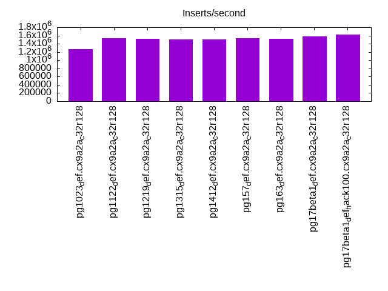
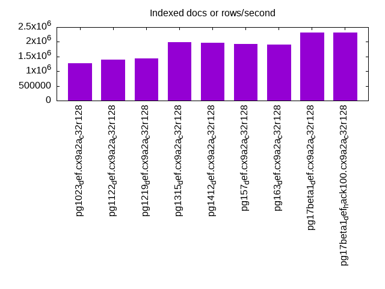
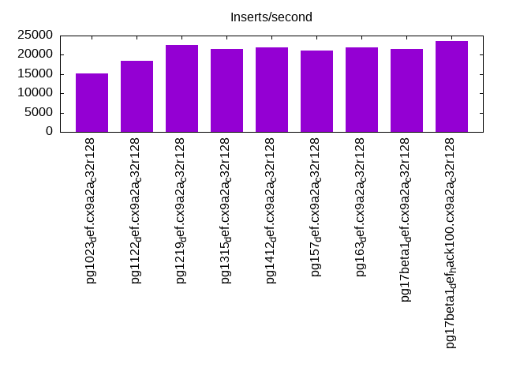
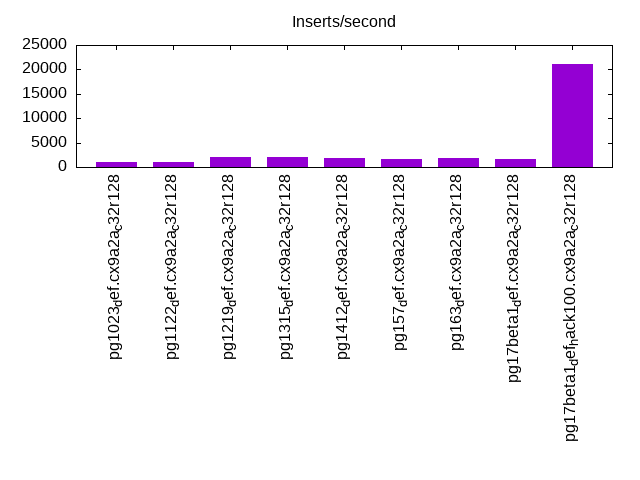
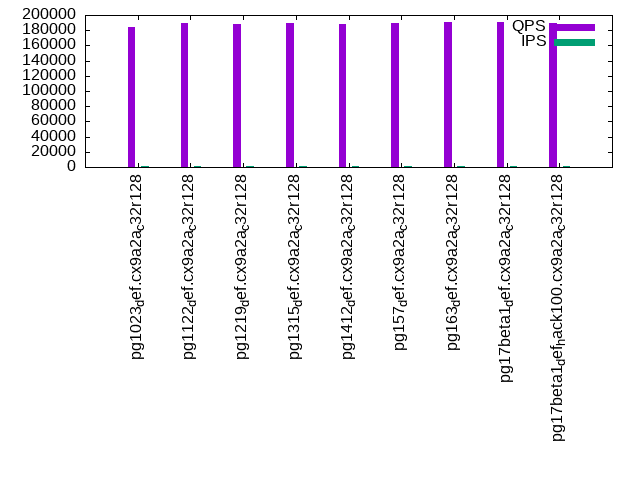
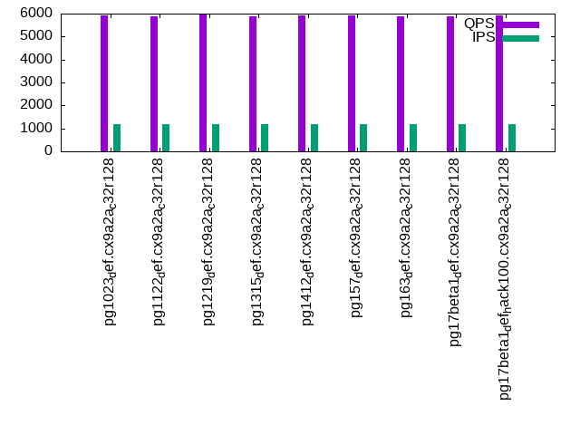
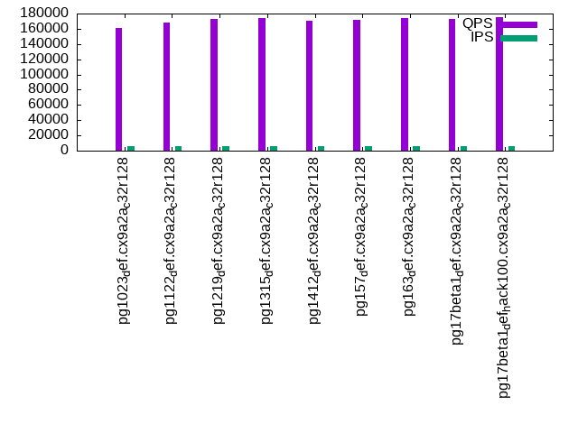
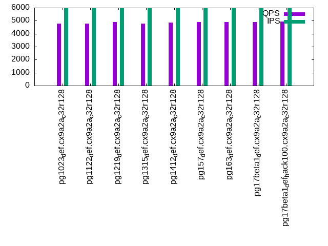
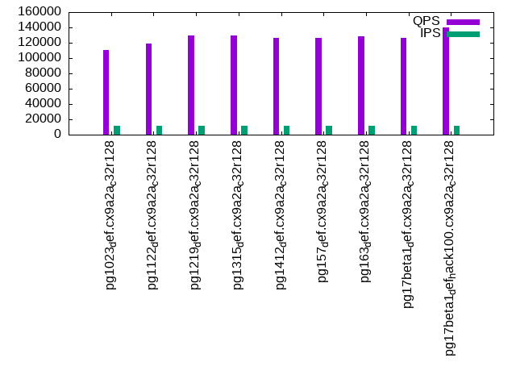
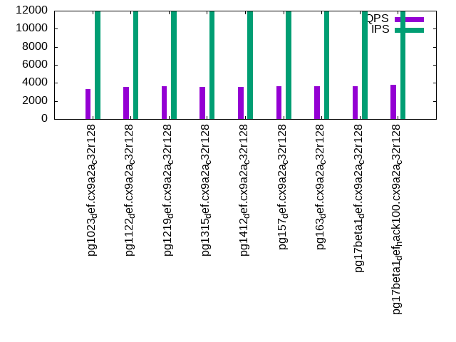

This is a report for the insert benchmark with 3600M docs and 12 client(s). It is generated by scripts (bash, awk, sed) and Tufte might not be impressed. An overview of the insert benchmark is here and a short update is here. Below, by DBMS, I mean DBMS+version.config. An example is my8020.c10b40 where my means MySQL, 8020 is version 8.0.20 and c10b40 is the name for the configuration file.
The test server has 32 cores, 128 RAM and two NVMe SSD. It is described here as the (v7) Dell Precision 7865. The benchmark was run with 12 clients and there were 1 or 3 connections per client (1 for queries or inserts without rate limits, 1+1 for rate limited inserts+deletes). It uses 12 tables with a table per client. It loads 300M rows per table without secondary indexes, creates 3 secondary indexes per table, then inserts 40+1m rows per table with a delete per insert to avoid growing the table. It then does 6 read+write tests for 1800s each that do queries as fast as possible with 100,100,500,500,1000,1000 inserts/s and the same for deletes/s per client concurrent with the queries. The database is larger than memory and the workload is IO-bound. Clients and the DBMS share one server. The per-database configs are in the per-database subdirectories here.
The tested DBMS are:
The numbers are inserts/s for l.i0, l.i1 and l.i2, indexed docs (or rows) /s for l.x and queries/s for qr100, qp100 thru qr1000, qp1000" The values are the average rate over the entire test for inserts (IPS) and queries (QPS). The range of values for IPS and QPS is split into 3 parts: bottom 25%, middle 50%, top 25%. Values in the bottom 25% have a red background, values in the top 25% have a green background and values in the middle have no color. A gray background is used for values that can be ignored because the DBMS did not sustain the target insert rate. Red backgrounds are not used when the minimum value is within 80% of the max value.
| dbms | l.i0 | l.x | l.i1 | l.i2 | qr100 | qp100 | qr500 | qp500 | qr1000 | qp1000 |
|---|---|---|---|---|---|---|---|---|---|---|
| pg1023_def.cx9a2a_c32r128 | 1274336 | 1268052 | 15204 | 1092 | 183828 | 5907 | 160908 | 4768 | 110361 | 3308 |
| pg1122_def.cx9a2a_c32r128 | 1528014 | 1396431 | 18526 | 1094 | 189723 | 5864 | 168132 | 4766 | 119343 | 3523 |
| pg1219_def.cx9a2a_c32r128 | 1512605 | 1444623 | 22493 | 2011 | 188242 | 5944 | 172343 | 4884 | 129789 | 3606 |
| pg1315_def.cx9a2a_c32r128 | 1510067 | 1983471 | 21467 | 2122 | 189868 | 5871 | 174129 | 4773 | 129323 | 3530 |
| pg1412_def.cx9a2a_c32r128 | 1508169 | 1965066 | 22018 | 1808 | 188595 | 5902 | 170788 | 4853 | 125905 | 3581 |
| pg157_def.cx9a2a_c32r128 | 1541756 | 1924105 | 21062 | 1584 | 189570 | 5909 | 171694 | 4880 | 126562 | 3603 |
| pg163_def.cx9a2a_c32r128 | 1517067 | 1913876 | 21948 | 1836 | 191194 | 5890 | 173974 | 4877 | 128848 | 3606 |
| pg17beta1_def.cx9a2a_c32r128 | 1584507 | 2306214 | 21476 | 1703 | 190409 | 5893 | 172812 | 4887 | 126288 | 3662 |
| pg17beta1_def_hack100.cx9a2a_c32r128 | 1622352 | 2307692 | 23599 | 21016 | 189767 | 5905 | 175364 | 4924 | 140520 | 3780 |
This table has relative throughput, throughput for the DBMS relative to the DBMS in the first line, using the absolute throughput from the previous table. Values less than 0.95 have a yellow background. Values greater than 1.05 have a blue background.
| dbms | l.i0 | l.x | l.i1 | l.i2 | qr100 | qp100 | qr500 | qp500 | qr1000 | qp1000 |
|---|---|---|---|---|---|---|---|---|---|---|
| pg1023_def.cx9a2a_c32r128 | 1.00 | 1.00 | 1.00 | 1.00 | 1.00 | 1.00 | 1.00 | 1.00 | 1.00 | 1.00 |
| pg1122_def.cx9a2a_c32r128 | 1.20 | 1.10 | 1.22 | 1.00 | 1.03 | 0.99 | 1.04 | 1.00 | 1.08 | 1.06 |
| pg1219_def.cx9a2a_c32r128 | 1.19 | 1.14 | 1.48 | 1.84 | 1.02 | 1.01 | 1.07 | 1.02 | 1.18 | 1.09 |
| pg1315_def.cx9a2a_c32r128 | 1.18 | 1.56 | 1.41 | 1.94 | 1.03 | 0.99 | 1.08 | 1.00 | 1.17 | 1.07 |
| pg1412_def.cx9a2a_c32r128 | 1.18 | 1.55 | 1.45 | 1.66 | 1.03 | 1.00 | 1.06 | 1.02 | 1.14 | 1.08 |
| pg157_def.cx9a2a_c32r128 | 1.21 | 1.52 | 1.39 | 1.45 | 1.03 | 1.00 | 1.07 | 1.02 | 1.15 | 1.09 |
| pg163_def.cx9a2a_c32r128 | 1.19 | 1.51 | 1.44 | 1.68 | 1.04 | 1.00 | 1.08 | 1.02 | 1.17 | 1.09 |
| pg17beta1_def.cx9a2a_c32r128 | 1.24 | 1.82 | 1.41 | 1.56 | 1.04 | 1.00 | 1.07 | 1.02 | 1.14 | 1.11 |
| pg17beta1_def_hack100.cx9a2a_c32r128 | 1.27 | 1.82 | 1.55 | 19.25 | 1.03 | 1.00 | 1.09 | 1.03 | 1.27 | 1.14 |
This lists the average rate of inserts/s for the tests that do inserts concurrent with queries. For such tests the query rate is listed in the table above. The read+write tests are setup so that the insert rate should match the target rate every second. Cells that are not at least 95% of the target have a red background to indicate a failure to satisfy the target.
| dbms | qr100.L1 | qp100.L2 | qr500.L3 | qp500.L4 | qr1000.L5 | qp1000.L6 |
|---|---|---|---|---|---|---|
| pg1023_def.cx9a2a_c32r128 | 1191 | 1191 | 5957 | 5957 | 11914 | 11907 |
| pg1122_def.cx9a2a_c32r128 | 1191 | 1191 | 5957 | 5957 | 11914 | 11914 |
| pg1219_def.cx9a2a_c32r128 | 1191 | 1191 | 5957 | 5957 | 11914 | 11914 |
| pg1315_def.cx9a2a_c32r128 | 1191 | 1191 | 5957 | 5957 | 11914 | 11914 |
| pg1412_def.cx9a2a_c32r128 | 1191 | 1191 | 5957 | 5954 | 11914 | 11914 |
| pg157_def.cx9a2a_c32r128 | 1191 | 1191 | 5954 | 5957 | 11914 | 11907 |
| pg163_def.cx9a2a_c32r128 | 1191 | 1191 | 5957 | 5957 | 11907 | 11914 |
| pg17beta1_def.cx9a2a_c32r128 | 1191 | 1191 | 5957 | 5957 | 11914 | 11914 |
| pg17beta1_def_hack100.cx9a2a_c32r128 | 1191 | 1191 | 5957 | 5957 | 11914 | 11914 |
| target | 1200 | 1200 | 6000 | 6000 | 12000 | 12000 |
l.i0: load without secondary indexes. Graphs for performance per 1-second interval are here.
Average throughput:
Insert response time histogram: each cell has the percentage of responses that take <= the time in the header and max is the max response time in seconds. For the max column values in the top 25% of the range have a red background and in the bottom 25% of the range have a green background. The red background is not used when the min value is within 80% of the max value.
| dbms | 256us | 1ms | 4ms | 16ms | 64ms | 256ms | 1s | 4s | 16s | gt | max |
|---|---|---|---|---|---|---|---|---|---|---|---|
| pg1023_def.cx9a2a_c32r128 | 97.530 | 1.595 | 0.544 | 0.300 | 0.031 | nonzero | 0.987 | ||||
| pg1122_def.cx9a2a_c32r128 | 97.949 | 1.364 | 0.381 | 0.288 | 0.018 | nonzero | 0.940 | ||||
| pg1219_def.cx9a2a_c32r128 | 97.873 | 1.518 | 0.327 | 0.266 | 0.015 | nonzero | 0.942 | ||||
| pg1315_def.cx9a2a_c32r128 | 97.600 | 1.666 | 0.386 | 0.337 | 0.011 | nonzero | 0.970 | ||||
| pg1412_def.cx9a2a_c32r128 | 97.812 | 1.669 | 0.236 | 0.275 | 0.008 | nonzero | 0.510 | ||||
| pg157_def.cx9a2a_c32r128 | 97.742 | 1.656 | 0.272 | 0.317 | 0.013 | nonzero | 0.513 | ||||
| pg163_def.cx9a2a_c32r128 | 97.375 | 2.020 | 0.354 | 0.235 | 0.013 | 0.003 | 0.706 | ||||
| pg17beta1_def.cx9a2a_c32r128 | 97.738 | 1.650 | 0.315 | 0.288 | 0.008 | nonzero | 0.514 | ||||
| pg17beta1_def_hack100.cx9a2a_c32r128 | 97.846 | 1.586 | 0.302 | 0.260 | 0.006 | nonzero | 0.504 |
Performance metrics for the DBMS listed above. Some are normalized by throughput, others are not. Legend for results is here.
ips qps rps rmbps wps wmbps rpq rkbpq wpi wkbpi csps cpups cspq cpupq dbgb1 dbgb2 rss maxop p50 p99 tag 1274336 0 653 5.4 8816.6 638.5 0.001 0.004 0.007 0.513 135518 49.0 0.106 12 344.4 448.5 97.3 0.987 104789 52944 pg1023_def.cx9a2a_c32r128 1528014 0 784 6.5 9150.9 667.8 0.001 0.004 0.006 0.448 160082 53.2 0.105 11 344.4 443.1 2.9 0.940 137551 64531 pg1122_def.cx9a2a_c32r128 1512605 0 764 6.4 9024.4 665.2 0.001 0.004 0.006 0.450 158660 53.6 0.105 11 344.4 459.2 2.4 0.942 137653 63931 pg1219_def.cx9a2a_c32r128 1510067 0 763 6.4 8062.9 665.4 0.001 0.004 0.005 0.451 159314 53.3 0.106 11 344.4 453.8 9.9 0.970 135455 46748 pg1315_def.cx9a2a_c32r128 1508169 0 780 6.1 7861.9 654.4 0.001 0.004 0.005 0.444 156457 54.6 0.104 12 344.4 441.3 10.7 0.510 139649 50046 pg1412_def.cx9a2a_c32r128 1541756 0 799 6.2 7894.5 659.7 0.001 0.004 0.005 0.438 160898 54.1 0.104 11 344.4 440.5 6.1 0.513 139151 57854 pg157_def.cx9a2a_c32r128 1517067 0 795 6.2 7668.8 651.3 0.001 0.004 0.005 0.440 160389 54.2 0.106 11 344.4 448.6 4.9 0.706 138852 9090 pg163_def.cx9a2a_c32r128 1584507 0 787 6.2 7992.1 678.6 0.000 0.004 0.005 0.439 166732 55.0 0.105 11 344.4 450.5 2.7 0.514 138951 63430 pg17beta1_def.cx9a2a_c32r128 1622352 0 849 6.7 8245.9 688.3 0.001 0.004 0.005 0.434 167763 55.7 0.103 11 344.4 440.5 17.2 0.504 143956 55939 pg17beta1_def_hack100.cx9a2a_c32r128
l.x: create secondary indexes.
Average throughput:
Performance metrics for the DBMS listed above. Some are normalized by throughput, others are not. Legend for results is here.
ips qps rps rmbps wps wmbps rpq rkbpq wpi wkbpi csps cpups cspq cpupq dbgb1 dbgb2 rss maxop p50 p99 tag 1268052 0 6981 669.4 7411.1 628.8 0.006 0.541 0.006 0.508 73308 17.1 0.058 4 692.1 788.1 64.3 0.004 NA NA pg1023_def.cx9a2a_c32r128 1396431 0 7763 745.8 7842.9 664.7 0.006 0.547 0.006 0.487 84791 18.9 0.061 4 692.1 788.1 64.5 0.052 NA NA pg1122_def.cx9a2a_c32r128 1444623 0 8122 775.1 8049.7 675.6 0.006 0.549 0.006 0.479 88736 19.4 0.061 4 691.9 788.0 63.4 0.045 NA NA pg1219_def.cx9a2a_c32r128 1983471 0 10968 1055.5 6439.2 650.3 0.006 0.545 0.003 0.336 70259 24.0 0.035 4 691.5 787.6 67.2 0.006 NA NA pg1315_def.cx9a2a_c32r128 1965066 0 10925 1052.5 6370.6 636.7 0.006 0.548 0.003 0.332 70839 23.9 0.036 4 691.5 787.6 66.4 0.006 NA NA pg1412_def.cx9a2a_c32r128 1924105 0 11575 1116.0 7701.7 758.4 0.006 0.594 0.004 0.404 73445 23.3 0.038 4 691.5 787.6 42.5 0.004 NA NA pg157_def.cx9a2a_c32r128 1913876 0 10873 1050.1 7413.2 739.4 0.006 0.562 0.004 0.396 77100 22.5 0.040 4 691.5 787.5 31.8 0.006 NA NA pg163_def.cx9a2a_c32r128 2306214 0 10076 1062.4 7954.5 788.5 0.004 0.472 0.003 0.350 35562 24.4 0.015 3 691.5 787.6 56.0 0.002 NA NA pg17beta1_def.cx9a2a_c32r128 2307692 0 9996 1050.8 8084.2 797.7 0.004 0.466 0.004 0.354 35844 24.4 0.016 3 691.5 787.6 56.8 0.002 NA NA pg17beta1_def_hack100.cx9a2a_c32r128
l.i1: continue load after secondary indexes created with 50 inserts per transaction. Graphs for performance per 1-second interval are here.
Average throughput:
Insert response time histogram: each cell has the percentage of responses that take <= the time in the header and max is the max response time in seconds. For the max column values in the top 25% of the range have a red background and in the bottom 25% of the range have a green background. The red background is not used when the min value is within 80% of the max value.
| dbms | 256us | 1ms | 4ms | 16ms | 64ms | 256ms | 1s | 4s | 16s | gt | max |
|---|---|---|---|---|---|---|---|---|---|---|---|
| pg1023_def.cx9a2a_c32r128 | 41.844 | 45.707 | 12.449 | 0.202 | |||||||
| pg1122_def.cx9a2a_c32r128 | 42.981 | 54.023 | 2.996 | 0.153 | |||||||
| pg1219_def.cx9a2a_c32r128 | 42.581 | 49.416 | 8.004 | 0.163 | |||||||
| pg1315_def.cx9a2a_c32r128 | 42.335 | 49.607 | 8.058 | 0.221 | |||||||
| pg1412_def.cx9a2a_c32r128 | 38.061 | 55.734 | 6.205 | 0.167 | |||||||
| pg157_def.cx9a2a_c32r128 | 39.022 | 55.374 | 5.603 | 0.204 | |||||||
| pg163_def.cx9a2a_c32r128 | 37.861 | 56.679 | 5.460 | 0.155 | |||||||
| pg17beta1_def.cx9a2a_c32r128 | 39.957 | 55.387 | 4.656 | 0.148 | |||||||
| pg17beta1_def_hack100.cx9a2a_c32r128 | 37.057 | 54.225 | 8.718 | 0.138 |
Delete response time histogram: each cell has the percentage of responses that take <= the time in the header and max is the max response time in seconds. For the max column values in the top 25% of the range have a red background and in the bottom 25% of the range have a green background. The red background is not used when the min value is within 80% of the max value.
| dbms | 256us | 1ms | 4ms | 16ms | 64ms | 256ms | 1s | 4s | 16s | gt | max |
|---|---|---|---|---|---|---|---|---|---|---|---|
| pg1023_def.cx9a2a_c32r128 | 1.270 | 6.398 | 16.215 | 67.157 | 8.960 | 0.203 | |||||
| pg1122_def.cx9a2a_c32r128 | 1.314 | 6.377 | 21.078 | 69.312 | 1.918 | 0.207 | |||||
| pg1219_def.cx9a2a_c32r128 | 3.371 | 13.330 | 41.662 | 36.554 | 5.083 | 0.226 | |||||
| pg1315_def.cx9a2a_c32r128 | 3.284 | 15.448 | 33.174 | 42.234 | 5.860 | 0.195 | |||||
| pg1412_def.cx9a2a_c32r128 | 2.828 | 11.489 | 29.370 | 51.743 | 4.571 | 0.144 | |||||
| pg157_def.cx9a2a_c32r128 | 2.797 | 11.328 | 26.782 | 54.145 | 4.948 | 0.204 | |||||
| pg163_def.cx9a2a_c32r128 | 3.304 | 11.957 | 28.175 | 52.396 | 4.167 | 0.151 | |||||
| pg17beta1_def.cx9a2a_c32r128 | 3.148 | 11.006 | 24.304 | 58.080 | 3.462 | 0.128 | |||||
| pg17beta1_def_hack100.cx9a2a_c32r128 | 96.636 | 0.790 | 1.191 | 1.051 | 0.333 | 0.108 |
Performance metrics for the DBMS listed above. Some are normalized by throughput, others are not. Legend for results is here.
ips qps rps rmbps wps wmbps rpq rkbpq wpi wkbpi csps cpups cspq cpupq dbgb1 dbgb2 rss maxop p50 p99 tag 15204 0 18423 147.4 26286.3 539.3 1.212 9.931 1.729 36.321 45379 25.7 2.985 541 700.2 826.7 97.4 0.202 1299 899 pg1023_def.cx9a2a_c32r128 18526 0 22505 179.8 29174.8 513.8 1.215 9.941 1.575 28.403 54011 33.4 2.915 577 700.2 796.2 97.4 0.153 1348 799 pg1122_def.cx9a2a_c32r128 22493 0 27254 217.7 34180.7 622.7 1.212 9.910 1.520 28.349 65692 26.8 2.921 381 699.8 839.0 97.4 0.163 1698 700 pg1219_def.cx9a2a_c32r128 21467 0 26141 225.0 33327.9 606.4 1.218 10.731 1.553 28.924 63019 26.6 2.936 397 699.4 795.4 2.5 0.221 1848 799 pg1315_def.cx9a2a_c32r128 22018 0 26607 212.6 33451.6 610.0 1.208 9.888 1.519 28.367 64038 29.1 2.908 423 699.4 799.2 97.2 0.167 1948 1044 pg1412_def.cx9a2a_c32r128 21062 0 25533 205.3 33088.8 586.2 1.212 9.982 1.571 28.500 61087 29.0 2.900 441 699.4 808.1 2.6 0.204 2048 949 pg157_def.cx9a2a_c32r128 21948 0 26517 212.4 34311.1 610.5 1.208 9.911 1.563 28.481 63032 28.9 2.872 421 699.4 811.5 97.2 0.155 1848 749 pg163_def.cx9a2a_c32r128 21476 0 25955 207.4 33401.6 596.6 1.209 9.891 1.555 28.445 61693 30.0 2.873 447 699.4 822.3 3.9 0.148 2198 999 pg17beta1_def.cx9a2a_c32r128 23599 0 28639 230.7 35914.2 653.8 1.214 10.011 1.522 28.369 67163 9.7 2.846 132 699.4 806.3 2.6 0.138 2198 949 pg17beta1_def_hack100.cx9a2a_c32r128
l.i2: continue load after secondary indexes created with 5 inserts per transaction. Graphs for performance per 1-second interval are here.
Average throughput:
Insert response time histogram: each cell has the percentage of responses that take <= the time in the header and max is the max response time in seconds. For the max column values in the top 25% of the range have a red background and in the bottom 25% of the range have a green background. The red background is not used when the min value is within 80% of the max value.
| dbms | 256us | 1ms | 4ms | 16ms | 64ms | 256ms | 1s | 4s | 16s | gt | max |
|---|---|---|---|---|---|---|---|---|---|---|---|
| pg1023_def.cx9a2a_c32r128 | 17.200 | 82.314 | 0.459 | 0.027 | 0.038 | ||||||
| pg1122_def.cx9a2a_c32r128 | 18.351 | 81.263 | 0.363 | 0.023 | 0.041 | ||||||
| pg1219_def.cx9a2a_c32r128 | nonzero | 19.589 | 79.896 | 0.476 | 0.038 | 0.040 | |||||
| pg1315_def.cx9a2a_c32r128 | 0.006 | 29.616 | 69.168 | 1.155 | 0.056 | nonzero | 0.069 | ||||
| pg1412_def.cx9a2a_c32r128 | 17.362 | 82.072 | 0.525 | 0.040 | 0.040 | ||||||
| pg157_def.cx9a2a_c32r128 | 19.251 | 80.381 | 0.343 | 0.025 | 0.040 | ||||||
| pg163_def.cx9a2a_c32r128 | nonzero | 18.327 | 81.219 | 0.419 | 0.034 | 0.040 | |||||
| pg17beta1_def.cx9a2a_c32r128 | nonzero | 21.690 | 77.907 | 0.371 | 0.032 | 0.061 | |||||
| pg17beta1_def_hack100.cx9a2a_c32r128 | 0.009 | 26.272 | 65.557 | 6.049 | 1.989 | 0.123 | 0.121 |
Delete response time histogram: each cell has the percentage of responses that take <= the time in the header and max is the max response time in seconds. For the max column values in the top 25% of the range have a red background and in the bottom 25% of the range have a green background. The red background is not used when the min value is within 80% of the max value.
| dbms | 256us | 1ms | 4ms | 16ms | 64ms | 256ms | 1s | 4s | 16s | gt | max |
|---|---|---|---|---|---|---|---|---|---|---|---|
| pg1023_def.cx9a2a_c32r128 | 99.470 | 0.530 | 0.172 | ||||||||
| pg1122_def.cx9a2a_c32r128 | 97.862 | 2.138 | 0.186 | ||||||||
| pg1219_def.cx9a2a_c32r128 | 0.624 | 99.375 | 0.001 | 0.150 | |||||||
| pg1315_def.cx9a2a_c32r128 | 13.810 | 14.953 | 71.236 | nonzero | 0.162 | ||||||
| pg1412_def.cx9a2a_c32r128 | 0.150 | 99.849 | 0.001 | 0.152 | |||||||
| pg157_def.cx9a2a_c32r128 | 0.050 | 99.950 | 0.001 | 0.161 | |||||||
| pg163_def.cx9a2a_c32r128 | 0.219 | 99.780 | 0.001 | 0.170 | |||||||
| pg17beta1_def.cx9a2a_c32r128 | 0.065 | 99.934 | 0.001 | 0.151 | |||||||
| pg17beta1_def_hack100.cx9a2a_c32r128 | 10.258 | 88.818 | 0.085 | 0.131 | 0.670 | 0.037 | 0.118 |
Performance metrics for the DBMS listed above. Some are normalized by throughput, others are not. Legend for results is here.
ips qps rps rmbps wps wmbps rpq rkbpq wpi wkbpi csps cpups cspq cpupq dbgb1 dbgb2 rss maxop p50 p99 tag 1092 0 1278 10.3 2181.2 38.1 1.170 9.619 1.997 35.681 8952 26.5 8.197 7765 702.2 798.3 97.4 0.038 160 140 pg1023_def.cx9a2a_c32r128 1094 0 1265 10.2 2242.1 33.5 1.156 9.506 2.049 31.356 8921 24.3 8.155 7108 702.2 798.3 97.4 0.041 90 75 pg1122_def.cx9a2a_c32r128 2011 0 2340 18.8 3803.0 58.3 1.163 9.549 1.891 29.672 15660 29.0 7.786 4614 701.8 797.8 97.4 0.040 145 125 pg1219_def.cx9a2a_c32r128 2122 0 2517 31.1 4274.0 72.8 1.186 14.984 2.014 35.149 16003 22.8 7.540 3438 701.3 797.3 60.5 0.069 794 525 pg1315_def.cx9a2a_c32r128 1808 0 2088 16.7 3623.6 54.2 1.155 9.475 2.005 30.678 14079 25.6 7.789 4532 701.4 797.4 97.2 0.040 235 205 pg1412_def.cx9a2a_c32r128 1584 0 1833 15.1 2966.6 47.8 1.157 9.789 1.872 30.887 12233 28.7 7.721 5797 701.4 797.4 2.4 0.040 130 115 pg157_def.cx9a2a_c32r128 1836 0 2140 17.1 3524.4 54.9 1.165 9.559 1.919 30.618 14025 27.6 7.637 4809 701.4 797.4 97.2 0.040 240 200 pg163_def.cx9a2a_c32r128 1703 0 1978 15.9 3331.5 50.0 1.162 9.536 1.956 30.077 12091 25.8 7.101 4848 701.4 797.4 97.3 0.061 235 205 pg17beta1_def.cx9a2a_c32r128 21016 0 24505 201.9 33693.1 621.1 1.166 9.837 1.603 30.266 135549 18.1 6.450 276 701.4 825.3 3.1 0.121 1533 1009 pg17beta1_def_hack100.cx9a2a_c32r128
qr100.L1: range queries with 100 insert/s per client. Graphs for performance per 1-second interval are here.
Average throughput:
Query response time histogram: each cell has the percentage of responses that take <= the time in the header and max is the max response time in seconds. For max values in the top 25% of the range have a red background and in the bottom 25% of the range have a green background. The red background is not used when the min value is within 80% of the max value.
| dbms | 256us | 1ms | 4ms | 16ms | 64ms | 256ms | 1s | 4s | 16s | gt | max |
|---|---|---|---|---|---|---|---|---|---|---|---|
| pg1023_def.cx9a2a_c32r128 | 99.996 | 0.004 | nonzero | nonzero | 0.009 | ||||||
| pg1122_def.cx9a2a_c32r128 | 99.996 | 0.004 | nonzero | nonzero | nonzero | 0.018 | |||||
| pg1219_def.cx9a2a_c32r128 | 99.996 | 0.004 | nonzero | nonzero | 0.013 | ||||||
| pg1315_def.cx9a2a_c32r128 | 99.996 | 0.004 | nonzero | nonzero | nonzero | 0.025 | |||||
| pg1412_def.cx9a2a_c32r128 | 99.996 | 0.004 | nonzero | nonzero | 0.010 | ||||||
| pg157_def.cx9a2a_c32r128 | 99.996 | 0.004 | nonzero | nonzero | 0.010 | ||||||
| pg163_def.cx9a2a_c32r128 | 99.996 | 0.004 | nonzero | nonzero | 0.010 | ||||||
| pg17beta1_def.cx9a2a_c32r128 | 99.996 | 0.003 | nonzero | nonzero | 0.010 | ||||||
| pg17beta1_def_hack100.cx9a2a_c32r128 | 99.996 | 0.003 | nonzero | nonzero | 0.011 |
Insert response time histogram: each cell has the percentage of responses that take <= the time in the header and max is the max response time in seconds. For max values in the top 25% of the range have a red background and in the bottom 25% of the range have a green background. The red background is not used when the min value is within 80% of the max value.
| dbms | 256us | 1ms | 4ms | 16ms | 64ms | 256ms | 1s | 4s | 16s | gt | max |
|---|---|---|---|---|---|---|---|---|---|---|---|
| pg1023_def.cx9a2a_c32r128 | 75.428 | 24.572 | 0.037 | ||||||||
| pg1122_def.cx9a2a_c32r128 | 74.352 | 25.648 | 0.052 | ||||||||
| pg1219_def.cx9a2a_c32r128 | 76.963 | 23.037 | 0.029 | ||||||||
| pg1315_def.cx9a2a_c32r128 | 74.562 | 25.438 | 0.032 | ||||||||
| pg1412_def.cx9a2a_c32r128 | 89.319 | 10.681 | 0.035 | ||||||||
| pg157_def.cx9a2a_c32r128 | 81.433 | 18.567 | 0.031 | ||||||||
| pg163_def.cx9a2a_c32r128 | 80.748 | 19.252 | 0.033 | ||||||||
| pg17beta1_def.cx9a2a_c32r128 | 83.650 | 16.350 | 0.032 | ||||||||
| pg17beta1_def_hack100.cx9a2a_c32r128 | 79.718 | 20.282 | 0.035 |
Delete response time histogram: each cell has the percentage of responses that take <= the time in the header and max is the max response time in seconds. For max values in the top 25% of the range have a red background and in the bottom 25% of the range have a green background. The red background is not used when the min value is within 80% of the max value.
| dbms | 256us | 1ms | 4ms | 16ms | 64ms | 256ms | 1s | 4s | 16s | gt | max |
|---|---|---|---|---|---|---|---|---|---|---|---|
| pg1023_def.cx9a2a_c32r128 | 31.065 | 68.880 | 0.056 | 0.011 | |||||||
| pg1122_def.cx9a2a_c32r128 | 30.530 | 69.412 | 0.058 | 0.011 | |||||||
| pg1219_def.cx9a2a_c32r128 | 62.141 | 37.808 | 0.051 | 0.010 | |||||||
| pg1315_def.cx9a2a_c32r128 | 63.472 | 36.461 | 0.067 | 0.009 | |||||||
| pg1412_def.cx9a2a_c32r128 | 57.289 | 42.683 | 0.028 | 0.010 | |||||||
| pg157_def.cx9a2a_c32r128 | 59.574 | 40.403 | 0.023 | 0.010 | |||||||
| pg163_def.cx9a2a_c32r128 | 67.856 | 32.095 | 0.049 | 0.010 | |||||||
| pg17beta1_def.cx9a2a_c32r128 | 63.979 | 35.986 | 0.035 | 0.010 | |||||||
| pg17beta1_def_hack100.cx9a2a_c32r128 | 99.553 | 0.394 | 0.053 | 0.009 |
Performance metrics for the DBMS listed above. Some are normalized by throughput, others are not. Legend for results is here.
ips qps rps rmbps wps wmbps rpq rkbpq wpi wkbpi csps cpups cspq cpupq dbgb1 dbgb2 rss maxop p50 p99 tag 1191 183828 1466 12.2 348.4 18.2 0.008 0.068 0.292 15.604 705923 38.2 3.840 66 702.4 798.4 97.4 0.009 15631 14565 pg1023_def.cx9a2a_c32r128 1191 189723 1468 12.4 347.9 18.2 0.008 0.067 0.292 15.609 728450 38.3 3.840 65 702.4 798.4 97.5 0.018 16158 14992 pg1122_def.cx9a2a_c32r128 1191 188242 1467 12.6 349.8 18.1 0.008 0.069 0.294 15.600 722800 38.1 3.840 65 702.0 798.0 97.4 0.013 15935 14816 pg1219_def.cx9a2a_c32r128 1191 189868 1460 12.5 423.6 18.9 0.008 0.067 0.356 16.243 729019 38.2 3.840 64 701.4 797.5 97.4 0.025 16047 14912 pg1315_def.cx9a2a_c32r128 1191 188595 1463 12.4 553.6 20.1 0.008 0.067 0.465 17.259 723991 38.1 3.839 65 701.5 797.5 97.2 0.010 15775 14608 pg1412_def.cx9a2a_c32r128 1191 189570 1462 12.3 534.4 20.0 0.008 0.066 0.449 17.169 727537 38.2 3.838 64 701.5 797.6 97.2 0.010 16117 15013 pg157_def.cx9a2a_c32r128 1191 191194 1498 12.7 618.6 20.7 0.008 0.068 0.519 17.821 733821 38.1 3.838 64 701.5 797.5 97.2 0.010 16238 15061 pg163_def.cx9a2a_c32r128 1191 190409 1498 12.5 625.2 20.8 0.008 0.067 0.525 17.870 730821 38.1 3.838 64 701.5 797.5 97.3 0.010 16004 14848 pg17beta1_def.cx9a2a_c32r128 1191 189767 1496 12.6 531.7 19.9 0.008 0.068 0.446 17.108 728359 38.2 3.838 64 701.5 797.5 0.9 0.011 15695 14576 pg17beta1_def_hack100.cx9a2a_c32r128
qp100.L2: point queries with 100 insert/s per client. Graphs for performance per 1-second interval are here.
Average throughput:
Query response time histogram: each cell has the percentage of responses that take <= the time in the header and max is the max response time in seconds. For max values in the top 25% of the range have a red background and in the bottom 25% of the range have a green background. The red background is not used when the min value is within 80% of the max value.
| dbms | 256us | 1ms | 4ms | 16ms | 64ms | 256ms | 1s | 4s | 16s | gt | max |
|---|---|---|---|---|---|---|---|---|---|---|---|
| pg1023_def.cx9a2a_c32r128 | 0.429 | 98.359 | 1.208 | 0.005 | 0.039 | ||||||
| pg1122_def.cx9a2a_c32r128 | nonzero | 0.441 | 97.937 | 1.618 | 0.005 | 0.039 | |||||
| pg1219_def.cx9a2a_c32r128 | 0.455 | 98.393 | 1.148 | 0.004 | 0.037 | ||||||
| pg1315_def.cx9a2a_c32r128 | nonzero | 0.428 | 98.119 | 1.449 | 0.005 | 0.040 | |||||
| pg1412_def.cx9a2a_c32r128 | nonzero | 0.427 | 98.339 | 1.229 | 0.004 | 0.038 | |||||
| pg157_def.cx9a2a_c32r128 | nonzero | 0.444 | 98.314 | 1.238 | 0.005 | 0.052 | |||||
| pg163_def.cx9a2a_c32r128 | 0.432 | 98.247 | 1.316 | 0.005 | 0.039 | ||||||
| pg17beta1_def.cx9a2a_c32r128 | 0.427 | 98.313 | 1.256 | 0.004 | 0.040 | ||||||
| pg17beta1_def_hack100.cx9a2a_c32r128 | 0.427 | 98.433 | 1.136 | 0.004 | 0.037 |
Insert response time histogram: each cell has the percentage of responses that take <= the time in the header and max is the max response time in seconds. For max values in the top 25% of the range have a red background and in the bottom 25% of the range have a green background. The red background is not used when the min value is within 80% of the max value.
| dbms | 256us | 1ms | 4ms | 16ms | 64ms | 256ms | 1s | 4s | 16s | gt | max |
|---|---|---|---|---|---|---|---|---|---|---|---|
| pg1023_def.cx9a2a_c32r128 | 1.880 | 98.113 | 0.007 | 0.065 | |||||||
| pg1122_def.cx9a2a_c32r128 | 1.558 | 98.426 | 0.016 | 0.068 | |||||||
| pg1219_def.cx9a2a_c32r128 | 2.060 | 97.938 | 0.002 | 0.065 | |||||||
| pg1315_def.cx9a2a_c32r128 | 1.317 | 98.683 | 0.063 | ||||||||
| pg1412_def.cx9a2a_c32r128 | 2.266 | 97.734 | 0.063 | ||||||||
| pg157_def.cx9a2a_c32r128 | 2.192 | 97.794 | 0.014 | 0.080 | |||||||
| pg163_def.cx9a2a_c32r128 | 2.111 | 97.889 | 0.063 | ||||||||
| pg17beta1_def.cx9a2a_c32r128 | 2.238 | 97.762 | 0.063 | ||||||||
| pg17beta1_def_hack100.cx9a2a_c32r128 | 2.521 | 97.475 | 0.005 | 0.065 |
Delete response time histogram: each cell has the percentage of responses that take <= the time in the header and max is the max response time in seconds. For max values in the top 25% of the range have a red background and in the bottom 25% of the range have a green background. The red background is not used when the min value is within 80% of the max value.
| dbms | 256us | 1ms | 4ms | 16ms | 64ms | 256ms | 1s | 4s | 16s | gt | max |
|---|---|---|---|---|---|---|---|---|---|---|---|
| pg1023_def.cx9a2a_c32r128 | 66.697 | 33.301 | 0.002 | 0.022 | |||||||
| pg1122_def.cx9a2a_c32r128 | 67.106 | 32.891 | 0.002 | 0.018 | |||||||
| pg1219_def.cx9a2a_c32r128 | 5.403 | 94.387 | 0.211 | 0.015 | |||||||
| pg1315_def.cx9a2a_c32r128 | 2.963 | 96.775 | 0.259 | 0.002 | 0.023 | ||||||
| pg1412_def.cx9a2a_c32r128 | 0.023 | 99.685 | 0.292 | 0.016 | |||||||
| pg157_def.cx9a2a_c32r128 | 0.014 | 99.604 | 0.382 | 0.013 | |||||||
| pg163_def.cx9a2a_c32r128 | 2.387 | 97.289 | 0.324 | 0.013 | |||||||
| pg17beta1_def.cx9a2a_c32r128 | 2.282 | 96.919 | 0.799 | 0.012 | |||||||
| pg17beta1_def_hack100.cx9a2a_c32r128 | 97.868 | 2.102 | 0.030 | 0.004 |
Performance metrics for the DBMS listed above. Some are normalized by throughput, others are not. Legend for results is here.
ips qps rps rmbps wps wmbps rpq rkbpq wpi wkbpi csps cpups cspq cpupq dbgb1 dbgb2 rss maxop p50 p99 tag 1191 5907 78604 621.3 4604.5 51.3 13.307 107.716 3.865 44.130 175288 9.7 29.676 526 702.6 798.6 97.4 0.039 496 352 pg1023_def.cx9a2a_c32r128 1191 5864 78045 616.8 4609.8 51.3 13.309 107.702 3.870 44.139 174056 9.5 29.681 518 702.6 798.6 97.5 0.039 511 352 pg1122_def.cx9a2a_c32r128 1191 5944 78900 621.3 4612.8 51.3 13.274 107.039 3.872 44.128 176080 9.4 29.623 506 702.1 798.2 97.4 0.037 511 352 pg1219_def.cx9a2a_c32r128 1191 5871 77961 613.7 4520.7 50.6 13.279 107.034 3.795 43.525 174061 9.3 29.648 507 701.6 797.6 97.4 0.040 496 336 pg1315_def.cx9a2a_c32r128 1191 5902 78379 617.6 4385.8 49.6 13.279 107.142 3.681 42.605 175046 9.3 29.657 504 701.5 797.6 97.2 0.038 496 352 pg1412_def.cx9a2a_c32r128 1191 5909 78443 617.8 4397.9 49.7 13.275 107.058 3.692 42.723 174698 9.2 29.564 498 701.7 797.8 97.2 0.052 511 352 pg157_def.cx9a2a_c32r128 1191 5890 78249 616.5 4306.8 48.9 13.284 107.173 3.615 42.069 174202 9.2 29.574 500 701.5 797.6 97.2 0.039 496 352 pg163_def.cx9a2a_c32r128 1191 5893 78245 616.2 4301.4 48.9 13.278 107.078 3.611 42.037 174150 9.4 29.553 510 701.5 797.6 97.3 0.040 511 352 pg17beta1_def.cx9a2a_c32r128 1191 5905 78385 617.5 4397.5 49.7 13.275 107.082 3.691 42.709 174456 9.1 29.545 493 701.5 797.6 0.9 0.037 509 352 pg17beta1_def_hack100.cx9a2a_c32r128
qr500.L3: range queries with 500 insert/s per client. Graphs for performance per 1-second interval are here.
Average throughput:
Query response time histogram: each cell has the percentage of responses that take <= the time in the header and max is the max response time in seconds. For max values in the top 25% of the range have a red background and in the bottom 25% of the range have a green background. The red background is not used when the min value is within 80% of the max value.
| dbms | 256us | 1ms | 4ms | 16ms | 64ms | 256ms | 1s | 4s | 16s | gt | max |
|---|---|---|---|---|---|---|---|---|---|---|---|
| pg1023_def.cx9a2a_c32r128 | 99.900 | 0.092 | 0.002 | 0.002 | 0.003 | nonzero | 0.088 | ||||
| pg1122_def.cx9a2a_c32r128 | 99.920 | 0.078 | 0.002 | nonzero | nonzero | nonzero | 0.122 | ||||
| pg1219_def.cx9a2a_c32r128 | 99.940 | 0.058 | 0.002 | nonzero | nonzero | nonzero | 0.071 | ||||
| pg1315_def.cx9a2a_c32r128 | 99.944 | 0.054 | 0.002 | nonzero | nonzero | nonzero | 0.114 | ||||
| pg1412_def.cx9a2a_c32r128 | 99.929 | 0.069 | 0.002 | nonzero | nonzero | nonzero | 0.088 | ||||
| pg157_def.cx9a2a_c32r128 | 99.932 | 0.065 | 0.002 | 0.001 | nonzero | nonzero | 0.094 | ||||
| pg163_def.cx9a2a_c32r128 | 99.939 | 0.059 | 0.002 | 0.001 | nonzero | nonzero | 0.099 | ||||
| pg17beta1_def.cx9a2a_c32r128 | 99.938 | 0.060 | 0.002 | 0.001 | nonzero | nonzero | 0.091 | ||||
| pg17beta1_def_hack100.cx9a2a_c32r128 | 99.977 | 0.021 | 0.001 | 0.001 | nonzero | nonzero | 0.078 |
Insert response time histogram: each cell has the percentage of responses that take <= the time in the header and max is the max response time in seconds. For max values in the top 25% of the range have a red background and in the bottom 25% of the range have a green background. The red background is not used when the min value is within 80% of the max value.
| dbms | 256us | 1ms | 4ms | 16ms | 64ms | 256ms | 1s | 4s | 16s | gt | max |
|---|---|---|---|---|---|---|---|---|---|---|---|
| pg1023_def.cx9a2a_c32r128 | 59.080 | 40.870 | 0.050 | 0.102 | |||||||
| pg1122_def.cx9a2a_c32r128 | 68.255 | 31.744 | nonzero | 0.066 | |||||||
| pg1219_def.cx9a2a_c32r128 | 70.298 | 29.702 | 0.063 | ||||||||
| pg1315_def.cx9a2a_c32r128 | 70.170 | 29.829 | nonzero | 0.064 | |||||||
| pg1412_def.cx9a2a_c32r128 | 69.002 | 30.997 | nonzero | 0.066 | |||||||
| pg157_def.cx9a2a_c32r128 | 68.768 | 31.232 | 0.058 | ||||||||
| pg163_def.cx9a2a_c32r128 | 70.623 | 29.375 | 0.002 | 0.068 | |||||||
| pg17beta1_def.cx9a2a_c32r128 | 70.181 | 29.819 | 0.062 | ||||||||
| pg17beta1_def_hack100.cx9a2a_c32r128 | 71.903 | 28.097 | 0.057 |
Delete response time histogram: each cell has the percentage of responses that take <= the time in the header and max is the max response time in seconds. For max values in the top 25% of the range have a red background and in the bottom 25% of the range have a green background. The red background is not used when the min value is within 80% of the max value.
| dbms | 256us | 1ms | 4ms | 16ms | 64ms | 256ms | 1s | 4s | 16s | gt | max |
|---|---|---|---|---|---|---|---|---|---|---|---|
| pg1023_def.cx9a2a_c32r128 | 3.539 | 74.829 | 21.617 | 0.015 | 0.093 | ||||||
| pg1122_def.cx9a2a_c32r128 | 3.434 | 81.303 | 15.263 | 0.054 | |||||||
| pg1219_def.cx9a2a_c32r128 | 50.142 | 49.528 | 0.330 | 0.036 | |||||||
| pg1315_def.cx9a2a_c32r128 | 49.699 | 49.929 | 0.373 | 0.035 | |||||||
| pg1412_def.cx9a2a_c32r128 | 35.051 | 64.116 | 0.832 | 0.033 | |||||||
| pg157_def.cx9a2a_c32r128 | 36.265 | 62.697 | 1.038 | 0.037 | |||||||
| pg163_def.cx9a2a_c32r128 | 44.517 | 54.533 | 0.950 | 0.032 | |||||||
| pg17beta1_def.cx9a2a_c32r128 | 39.779 | 58.753 | 1.468 | 0.037 | |||||||
| pg17beta1_def_hack100.cx9a2a_c32r128 | 99.562 | 0.385 | 0.053 | 0.010 |
Performance metrics for the DBMS listed above. Some are normalized by throughput, others are not. Legend for results is here.
ips qps rps rmbps wps wmbps rpq rkbpq wpi wkbpi csps cpups cspq cpupq dbgb1 dbgb2 rss maxop p50 p99 tag 5957 160908 8589 69.8 8403.1 164.3 0.053 0.444 1.411 28.246 622050 43.0 3.866 86 703.6 808.6 97.4 0.088 13520 10996 pg1023_def.cx9a2a_c32r128 5957 168132 8588 69.7 7649.0 138.2 0.051 0.425 1.284 23.754 648224 43.4 3.855 83 703.6 799.6 97.5 0.122 14144 12802 pg1122_def.cx9a2a_c32r128 5957 172343 8576 69.7 7639.8 138.0 0.050 0.414 1.283 23.723 672196 41.7 3.900 77 703.1 799.2 97.4 0.071 14437 13222 pg1219_def.cx9a2a_c32r128 5957 174129 8578 70.2 7595.1 137.4 0.049 0.413 1.275 23.627 679256 41.6 3.901 76 702.3 798.3 97.4 0.114 14992 13782 pg1315_def.cx9a2a_c32r128 5957 170788 8578 70.3 7528.7 136.5 0.050 0.422 1.264 23.467 664211 42.1 3.889 79 702.0 798.0 97.2 0.088 14261 13074 pg1412_def.cx9a2a_c32r128 5954 171694 8570 69.6 7531.0 136.9 0.050 0.415 1.265 23.543 668039 42.1 3.891 78 702.6 798.7 97.2 0.094 14624 13350 pg157_def.cx9a2a_c32r128 5957 173974 8584 70.6 7474.5 135.9 0.049 0.415 1.255 23.365 676614 41.8 3.889 77 701.8 797.8 97.2 0.099 14720 13505 pg163_def.cx9a2a_c32r128 5957 172812 8579 70.4 7470.6 135.9 0.050 0.417 1.254 23.361 671699 42.0 3.887 78 701.9 797.9 97.3 0.091 14672 13441 pg17beta1_def.cx9a2a_c32r128 5957 175364 8575 70.4 7530.1 136.6 0.049 0.411 1.264 23.489 687995 40.0 3.923 73 702.0 798.0 97.3 0.078 14752 13589 pg17beta1_def_hack100.cx9a2a_c32r128
qp500.L4: point queries with 500 insert/s per client. Graphs for performance per 1-second interval are here.
Average throughput:
Query response time histogram: each cell has the percentage of responses that take <= the time in the header and max is the max response time in seconds. For max values in the top 25% of the range have a red background and in the bottom 25% of the range have a green background. The red background is not used when the min value is within 80% of the max value.
| dbms | 256us | 1ms | 4ms | 16ms | 64ms | 256ms | 1s | 4s | 16s | gt | max |
|---|---|---|---|---|---|---|---|---|---|---|---|
| pg1023_def.cx9a2a_c32r128 | 0.140 | 91.497 | 8.301 | 0.062 | nonzero | 0.066 | |||||
| pg1122_def.cx9a2a_c32r128 | 0.144 | 90.602 | 9.226 | 0.028 | 0.048 | ||||||
| pg1219_def.cx9a2a_c32r128 | 0.157 | 91.966 | 7.853 | 0.024 | 0.047 | ||||||
| pg1315_def.cx9a2a_c32r128 | 0.141 | 90.736 | 9.096 | 0.027 | 0.049 | ||||||
| pg1412_def.cx9a2a_c32r128 | 0.144 | 91.930 | 7.904 | 0.023 | 0.045 | ||||||
| pg157_def.cx9a2a_c32r128 | nonzero | 0.153 | 92.079 | 7.745 | 0.023 | 0.047 | |||||
| pg163_def.cx9a2a_c32r128 | 0.150 | 92.105 | 7.722 | 0.022 | 0.053 | ||||||
| pg17beta1_def.cx9a2a_c32r128 | 0.148 | 92.185 | 7.644 | 0.023 | nonzero | 0.081 | |||||
| pg17beta1_def_hack100.cx9a2a_c32r128 | 0.157 | 92.546 | 7.274 | 0.022 | nonzero | 0.086 |
Insert response time histogram: each cell has the percentage of responses that take <= the time in the header and max is the max response time in seconds. For max values in the top 25% of the range have a red background and in the bottom 25% of the range have a green background. The red background is not used when the min value is within 80% of the max value.
| dbms | 256us | 1ms | 4ms | 16ms | 64ms | 256ms | 1s | 4s | 16s | gt | max |
|---|---|---|---|---|---|---|---|---|---|---|---|
| pg1023_def.cx9a2a_c32r128 | 7.473 | 91.004 | 1.523 | 0.104 | |||||||
| pg1122_def.cx9a2a_c32r128 | 3.539 | 96.404 | 0.057 | 0.144 | |||||||
| pg1219_def.cx9a2a_c32r128 | 6.406 | 93.577 | 0.017 | 0.075 | |||||||
| pg1315_def.cx9a2a_c32r128 | 3.285 | 96.685 | 0.031 | 0.085 | |||||||
| pg1412_def.cx9a2a_c32r128 | 5.750 | 94.231 | 0.019 | 0.094 | |||||||
| pg157_def.cx9a2a_c32r128 | 5.797 | 94.170 | 0.032 | 0.087 | |||||||
| pg163_def.cx9a2a_c32r128 | 5.869 | 94.106 | 0.025 | 0.085 | |||||||
| pg17beta1_def.cx9a2a_c32r128 | 6.033 | 93.929 | 0.037 | 0.098 | |||||||
| pg17beta1_def_hack100.cx9a2a_c32r128 | 7.130 | 92.841 | 0.029 | 0.112 |
Delete response time histogram: each cell has the percentage of responses that take <= the time in the header and max is the max response time in seconds. For max values in the top 25% of the range have a red background and in the bottom 25% of the range have a green background. The red background is not used when the min value is within 80% of the max value.
| dbms | 256us | 1ms | 4ms | 16ms | 64ms | 256ms | 1s | 4s | 16s | gt | max |
|---|---|---|---|---|---|---|---|---|---|---|---|
| pg1023_def.cx9a2a_c32r128 | 2.301 | 97.575 | 0.123 | 0.098 | |||||||
| pg1122_def.cx9a2a_c32r128 | 0.840 | 99.151 | 0.009 | 0.077 | |||||||
| pg1219_def.cx9a2a_c32r128 | 66.761 | 33.239 | nonzero | 0.066 | |||||||
| pg1315_def.cx9a2a_c32r128 | 54.800 | 45.199 | nonzero | 0.068 | |||||||
| pg1412_def.cx9a2a_c32r128 | 40.735 | 59.263 | 0.001 | 0.069 | |||||||
| pg157_def.cx9a2a_c32r128 | 40.755 | 59.244 | 0.002 | 0.069 | |||||||
| pg163_def.cx9a2a_c32r128 | 39.073 | 60.926 | 0.001 | 0.075 | |||||||
| pg17beta1_def.cx9a2a_c32r128 | 36.102 | 63.895 | 0.002 | 0.086 | |||||||
| pg17beta1_def_hack100.cx9a2a_c32r128 | 98.840 | 1.156 | 0.003 | 0.001 | 0.020 |
Performance metrics for the DBMS listed above. Some are normalized by throughput, others are not. Legend for results is here.
ips qps rps rmbps wps wmbps rpq rkbpq wpi wkbpi csps cpups cspq cpupq dbgb1 dbgb2 rss maxop p50 p99 tag 5957 4768 76191 601.9 14562.6 216.7 15.981 129.271 2.445 37.250 168545 19.3 35.352 1295 704.6 800.6 97.4 0.066 400 304 pg1023_def.cx9a2a_c32r128 5957 4766 76110 601.0 14524.0 186.7 15.969 129.128 2.438 32.101 168081 19.5 35.267 1309 704.6 800.6 97.5 0.048 416 288 pg1122_def.cx9a2a_c32r128 5957 4884 77522 610.2 14534.2 186.7 15.874 127.938 2.440 32.098 171811 15.7 35.181 1029 704.1 800.1 97.4 0.047 416 304 pg1219_def.cx9a2a_c32r128 5957 4773 76098 599.1 14525.2 186.7 15.944 128.534 2.438 32.091 168604 16.0 35.325 1073 703.1 799.1 97.4 0.049 416 288 pg1315_def.cx9a2a_c32r128 5954 4853 77173 607.8 14516.4 186.7 15.901 128.243 2.438 32.117 170818 16.7 35.196 1101 702.5 798.5 97.2 0.045 416 320 pg1412_def.cx9a2a_c32r128 5957 4880 77453 609.5 14538.1 187.0 15.873 127.909 2.441 32.151 171159 16.7 35.077 1095 703.6 799.6 97.2 0.047 416 320 pg157_def.cx9a2a_c32r128 5957 4877 77464 610.3 14578.5 187.2 15.884 128.139 2.447 32.173 170583 16.7 34.978 1096 702.1 798.2 97.2 0.053 416 304 pg163_def.cx9a2a_c32r128 5957 4887 77576 611.3 14531.6 187.0 15.874 128.094 2.439 32.143 170483 16.9 34.884 1107 702.2 798.3 97.3 0.081 416 304 pg17beta1_def.cx9a2a_c32r128 5957 4924 78055 616.4 14448.1 186.6 15.854 128.208 2.425 32.069 171494 10.6 34.832 689 702.4 798.5 97.3 0.086 416 320 pg17beta1_def_hack100.cx9a2a_c32r128
qr1000.L5: range queries with 1000 insert/s per client. Graphs for performance per 1-second interval are here.
Average throughput:
Query response time histogram: each cell has the percentage of responses that take <= the time in the header and max is the max response time in seconds. For max values in the top 25% of the range have a red background and in the bottom 25% of the range have a green background. The red background is not used when the min value is within 80% of the max value.
| dbms | 256us | 1ms | 4ms | 16ms | 64ms | 256ms | 1s | 4s | 16s | gt | max |
|---|---|---|---|---|---|---|---|---|---|---|---|
| pg1023_def.cx9a2a_c32r128 | 99.399 | 0.556 | 0.015 | 0.017 | 0.013 | nonzero | nonzero | 0.392 | |||
| pg1122_def.cx9a2a_c32r128 | 99.518 | 0.465 | 0.012 | 0.003 | 0.002 | nonzero | nonzero | 0.398 | |||
| pg1219_def.cx9a2a_c32r128 | 99.517 | 0.470 | 0.011 | 0.002 | 0.001 | nonzero | nonzero | 0.410 | |||
| pg1315_def.cx9a2a_c32r128 | 99.504 | 0.481 | 0.011 | 0.003 | 0.001 | nonzero | nonzero | 0.381 | |||
| pg1412_def.cx9a2a_c32r128 | 99.497 | 0.490 | 0.011 | 0.002 | 0.001 | nonzero | nonzero | 0.374 | |||
| pg157_def.cx9a2a_c32r128 | 99.485 | 0.501 | 0.010 | 0.002 | 0.001 | nonzero | nonzero | 0.383 | |||
| pg163_def.cx9a2a_c32r128 | 99.532 | 0.456 | 0.010 | 0.002 | 0.001 | nonzero | nonzero | 0.415 | |||
| pg17beta1_def.cx9a2a_c32r128 | 99.516 | 0.471 | 0.011 | 0.002 | 0.001 | nonzero | nonzero | 0.393 | |||
| pg17beta1_def_hack100.cx9a2a_c32r128 | 99.914 | 0.074 | 0.008 | 0.003 | nonzero | nonzero | nonzero | 0.336 |
Insert response time histogram: each cell has the percentage of responses that take <= the time in the header and max is the max response time in seconds. For max values in the top 25% of the range have a red background and in the bottom 25% of the range have a green background. The red background is not used when the min value is within 80% of the max value.
| dbms | 256us | 1ms | 4ms | 16ms | 64ms | 256ms | 1s | 4s | 16s | gt | max |
|---|---|---|---|---|---|---|---|---|---|---|---|
| pg1023_def.cx9a2a_c32r128 | 39.430 | 57.966 | 2.604 | 0.190 | |||||||
| pg1122_def.cx9a2a_c32r128 | 36.087 | 63.619 | 0.294 | 0.125 | |||||||
| pg1219_def.cx9a2a_c32r128 | 45.587 | 54.321 | 0.092 | 0.100 | |||||||
| pg1315_def.cx9a2a_c32r128 | 38.326 | 61.382 | 0.291 | 0.110 | |||||||
| pg1412_def.cx9a2a_c32r128 | 43.190 | 56.710 | 0.100 | 0.131 | |||||||
| pg157_def.cx9a2a_c32r128 | 44.489 | 55.390 | 0.121 | 0.104 | |||||||
| pg163_def.cx9a2a_c32r128 | 46.431 | 53.473 | 0.096 | 0.082 | |||||||
| pg17beta1_def.cx9a2a_c32r128 | 43.483 | 56.397 | 0.121 | 0.099 | |||||||
| pg17beta1_def_hack100.cx9a2a_c32r128 | 70.277 | 29.710 | 0.013 | 0.084 |
Delete response time histogram: each cell has the percentage of responses that take <= the time in the header and max is the max response time in seconds. For max values in the top 25% of the range have a red background and in the bottom 25% of the range have a green background. The red background is not used when the min value is within 80% of the max value.
| dbms | 256us | 1ms | 4ms | 16ms | 64ms | 256ms | 1s | 4s | 16s | gt | max |
|---|---|---|---|---|---|---|---|---|---|---|---|
| pg1023_def.cx9a2a_c32r128 | 96.557 | 3.443 | 0.174 | ||||||||
| pg1122_def.cx9a2a_c32r128 | 99.570 | 0.430 | 0.145 | ||||||||
| pg1219_def.cx9a2a_c32r128 | 9.974 | 89.981 | 0.045 | 0.113 | |||||||
| pg1315_def.cx9a2a_c32r128 | 9.301 | 90.585 | 0.114 | 0.119 | |||||||
| pg1412_def.cx9a2a_c32r128 | 7.804 | 92.108 | 0.088 | 0.114 | |||||||
| pg157_def.cx9a2a_c32r128 | 2.215 | 97.686 | 0.100 | 0.122 | |||||||
| pg163_def.cx9a2a_c32r128 | 4.152 | 95.794 | 0.054 | 0.126 | |||||||
| pg17beta1_def.cx9a2a_c32r128 | 1.182 | 98.706 | 0.112 | 0.116 | |||||||
| pg17beta1_def_hack100.cx9a2a_c32r128 | 98.852 | 0.647 | 0.465 | 0.036 | 0.061 |
Performance metrics for the DBMS listed above. Some are normalized by throughput, others are not. Legend for results is here.
ips qps rps rmbps wps wmbps rpq rkbpq wpi wkbpi csps cpups cspq cpupq dbgb1 dbgb2 rss maxop p50 p99 tag 11914 110361 15553 128.2 19833.0 394.3 0.141 1.190 1.665 33.891 403749 63.6 3.658 184 706.6 802.7 97.4 0.392 9401 6761 pg1023_def.cx9a2a_c32r128 11914 119343 15545 128.0 18769.4 311.9 0.130 1.098 1.575 26.804 424756 64.9 3.559 174 706.6 802.7 97.5 0.398 10085 8247 pg1122_def.cx9a2a_c32r128 11914 129789 15530 128.0 18606.0 306.5 0.120 1.010 1.562 26.345 477600 57.4 3.680 142 706.0 802.0 97.4 0.410 11012 9494 pg1219_def.cx9a2a_c32r128 11914 129323 15512 127.9 18666.3 308.6 0.120 1.013 1.567 26.525 475596 57.6 3.678 143 705.0 801.0 97.4 0.381 11020 9066 pg1315_def.cx9a2a_c32r128 11914 125905 15506 127.8 18567.7 305.5 0.123 1.039 1.558 26.257 462804 58.1 3.676 148 704.3 800.4 97.2 0.374 10676 9030 pg1412_def.cx9a2a_c32r128 11914 126562 15509 127.8 18521.8 305.3 0.123 1.034 1.555 26.242 459620 59.4 3.632 150 705.5 801.5 97.2 0.383 10740 9286 pg157_def.cx9a2a_c32r128 11907 128848 15516 128.1 18411.3 303.5 0.120 1.018 1.546 26.097 467436 58.6 3.628 146 703.9 799.9 97.2 0.415 11044 9574 pg163_def.cx9a2a_c32r128 11914 126288 15508 128.0 18333.1 302.3 0.123 1.038 1.539 25.987 452606 59.8 3.584 152 703.9 800.2 97.3 0.393 10756 8654 pg17beta1_def.cx9a2a_c32r128 11914 140520 15508 128.2 18050.8 298.6 0.110 0.934 1.515 25.668 569803 42.2 4.055 96 704.1 800.2 97.3 0.336 11987 10948 pg17beta1_def_hack100.cx9a2a_c32r128
qp1000.L6: point queries with 1000 insert/s per client. Graphs for performance per 1-second interval are here.
Average throughput:
Query response time histogram: each cell has the percentage of responses that take <= the time in the header and max is the max response time in seconds. For max values in the top 25% of the range have a red background and in the bottom 25% of the range have a green background. The red background is not used when the min value is within 80% of the max value.
| dbms | 256us | 1ms | 4ms | 16ms | 64ms | 256ms | 1s | 4s | 16s | gt | max |
|---|---|---|---|---|---|---|---|---|---|---|---|
| pg1023_def.cx9a2a_c32r128 | 0.017 | 74.794 | 24.411 | 0.776 | 0.002 | 0.099 | |||||
| pg1122_def.cx9a2a_c32r128 | 0.022 | 74.481 | 25.289 | 0.208 | nonzero | 0.080 | |||||
| pg1219_def.cx9a2a_c32r128 | 0.025 | 75.490 | 24.297 | 0.187 | nonzero | 0.083 | |||||
| pg1315_def.cx9a2a_c32r128 | 0.021 | 74.619 | 25.155 | 0.204 | nonzero | 0.108 | |||||
| pg1412_def.cx9a2a_c32r128 | 0.023 | 75.205 | 24.573 | 0.199 | 0.001 | 0.102 | |||||
| pg157_def.cx9a2a_c32r128 | 0.025 | 75.510 | 24.269 | 0.196 | nonzero | 0.070 | |||||
| pg163_def.cx9a2a_c32r128 | 0.023 | 75.693 | 24.089 | 0.195 | nonzero | 0.078 | |||||
| pg17beta1_def.cx9a2a_c32r128 | nonzero | 0.026 | 76.305 | 23.501 | 0.168 | nonzero | 0.082 | ||||
| pg17beta1_def_hack100.cx9a2a_c32r128 | 0.029 | 78.429 | 21.407 | 0.135 | nonzero | 0.095 |
Insert response time histogram: each cell has the percentage of responses that take <= the time in the header and max is the max response time in seconds. For max values in the top 25% of the range have a red background and in the bottom 25% of the range have a green background. The red background is not used when the min value is within 80% of the max value.
| dbms | 256us | 1ms | 4ms | 16ms | 64ms | 256ms | 1s | 4s | 16s | gt | max |
|---|---|---|---|---|---|---|---|---|---|---|---|
| pg1023_def.cx9a2a_c32r128 | 7.210 | 86.766 | 6.023 | 0.140 | |||||||
| pg1122_def.cx9a2a_c32r128 | 3.241 | 95.794 | 0.965 | 0.145 | |||||||
| pg1219_def.cx9a2a_c32r128 | 2.896 | 96.197 | 0.908 | 0.122 | |||||||
| pg1315_def.cx9a2a_c32r128 | 2.914 | 96.016 | 1.070 | 0.164 | |||||||
| pg1412_def.cx9a2a_c32r128 | 3.022 | 95.589 | 1.389 | 0.134 | |||||||
| pg157_def.cx9a2a_c32r128 | 2.897 | 95.748 | 1.355 | 0.113 | |||||||
| pg163_def.cx9a2a_c32r128 | 2.520 | 96.112 | 1.369 | 0.117 | |||||||
| pg17beta1_def.cx9a2a_c32r128 | 2.298 | 96.690 | 1.012 | 0.121 | |||||||
| pg17beta1_def_hack100.cx9a2a_c32r128 | 3.878 | 95.541 | 0.581 | 0.122 |
Delete response time histogram: each cell has the percentage of responses that take <= the time in the header and max is the max response time in seconds. For max values in the top 25% of the range have a red background and in the bottom 25% of the range have a green background. The red background is not used when the min value is within 80% of the max value.
| dbms | 256us | 1ms | 4ms | 16ms | 64ms | 256ms | 1s | 4s | 16s | gt | max |
|---|---|---|---|---|---|---|---|---|---|---|---|
| pg1023_def.cx9a2a_c32r128 | 97.822 | 2.178 | 0.169 | ||||||||
| pg1122_def.cx9a2a_c32r128 | 99.675 | 0.325 | 0.172 | ||||||||
| pg1219_def.cx9a2a_c32r128 | 0.231 | 99.684 | 0.085 | 0.177 | |||||||
| pg1315_def.cx9a2a_c32r128 | 0.153 | 99.738 | 0.109 | 0.173 | |||||||
| pg1412_def.cx9a2a_c32r128 | 0.079 | 99.675 | 0.246 | 0.174 | |||||||
| pg157_def.cx9a2a_c32r128 | 0.058 | 99.716 | 0.226 | 0.176 | |||||||
| pg163_def.cx9a2a_c32r128 | 0.077 | 99.737 | 0.186 | 0.172 | |||||||
| pg17beta1_def.cx9a2a_c32r128 | 0.042 | 99.845 | 0.113 | 0.164 | |||||||
| pg17beta1_def_hack100.cx9a2a_c32r128 | 99.054 | 0.821 | 0.060 | 0.065 | nonzero | 0.065 |
Performance metrics for the DBMS listed above. Some are normalized by throughput, others are not. Legend for results is here.
ips qps rps rmbps wps wmbps rpq rkbpq wpi wkbpi csps cpups cspq cpupq dbgb1 dbgb2 rss maxop p50 p99 tag 11907 3308 69556 550.1 26004.0 442.7 21.028 170.308 2.184 38.071 153780 39.3 46.490 3802 709.3 805.4 97.4 0.099 272 176 pg1023_def.cx9a2a_c32r128 11914 3523 72516 574.9 25151.6 364.7 20.584 167.109 2.111 31.342 159618 39.6 45.309 3597 709.3 814.9 97.5 0.080 303 240 pg1122_def.cx9a2a_c32r128 11914 3606 73531 581.2 25477.1 363.7 20.391 165.055 2.138 31.262 163184 30.9 45.253 2742 708.6 804.6 97.4 0.083 304 224 pg1219_def.cx9a2a_c32r128 11914 3530 72467 572.1 25180.7 362.7 20.531 165.964 2.114 31.176 160576 31.5 45.494 2856 707.6 803.7 97.4 0.108 304 224 pg1315_def.cx9a2a_c32r128 11914 3581 73165 578.2 25162.9 359.9 20.432 165.337 2.112 30.931 161495 32.3 45.099 2886 706.9 803.0 97.2 0.102 304 208 pg1412_def.cx9a2a_c32r128 11907 3603 73480 580.5 25207.0 359.9 20.393 164.977 2.117 30.947 162151 32.2 45.002 2860 708.1 804.1 97.2 0.070 320 208 pg157_def.cx9a2a_c32r128 11914 3606 73505 580.5 25289.3 360.5 20.384 164.840 2.123 30.983 160984 32.6 44.642 2893 706.5 802.5 97.2 0.078 318 208 pg163_def.cx9a2a_c32r128 11914 3662 74251 586.7 25136.3 357.8 20.275 164.050 2.110 30.755 161790 33.1 44.178 2892 706.5 807.6 97.3 0.082 320 208 pg17beta1_def.cx9a2a_c32r128 11914 3780 75903 599.9 25199.5 357.0 20.081 162.516 2.115 30.682 165688 12.1 43.834 1024 706.7 802.8 97.3 0.095 320 224 pg17beta1_def_hack100.cx9a2a_c32r128
l.i0: load without secondary indexes
Performance metrics for all DBMS, not just the ones listed above. Some are normalized by throughput, others are not. Legend for results is here.
ips qps rps rmbps wps wmbps rpq rkbpq wpi wkbpi csps cpups cspq cpupq dbgb1 dbgb2 rss maxop p50 p99 tag 1274336 0 653 5.4 8816.6 638.5 0.001 0.004 0.007 0.513 135518 49.0 0.106 12 344.4 448.5 97.3 0.987 104789 52944 pg1023_def.cx9a2a_c32r128 1528014 0 784 6.5 9150.9 667.8 0.001 0.004 0.006 0.448 160082 53.2 0.105 11 344.4 443.1 2.9 0.940 137551 64531 pg1122_def.cx9a2a_c32r128 1512605 0 764 6.4 9024.4 665.2 0.001 0.004 0.006 0.450 158660 53.6 0.105 11 344.4 459.2 2.4 0.942 137653 63931 pg1219_def.cx9a2a_c32r128 1510067 0 763 6.4 8062.9 665.4 0.001 0.004 0.005 0.451 159314 53.3 0.106 11 344.4 453.8 9.9 0.970 135455 46748 pg1315_def.cx9a2a_c32r128 1508169 0 780 6.1 7861.9 654.4 0.001 0.004 0.005 0.444 156457 54.6 0.104 12 344.4 441.3 10.7 0.510 139649 50046 pg1412_def.cx9a2a_c32r128 1541756 0 799 6.2 7894.5 659.7 0.001 0.004 0.005 0.438 160898 54.1 0.104 11 344.4 440.5 6.1 0.513 139151 57854 pg157_def.cx9a2a_c32r128 1517067 0 795 6.2 7668.8 651.3 0.001 0.004 0.005 0.440 160389 54.2 0.106 11 344.4 448.6 4.9 0.706 138852 9090 pg163_def.cx9a2a_c32r128 1584507 0 787 6.2 7992.1 678.6 0.000 0.004 0.005 0.439 166732 55.0 0.105 11 344.4 450.5 2.7 0.514 138951 63430 pg17beta1_def.cx9a2a_c32r128 1622352 0 849 6.7 8245.9 688.3 0.001 0.004 0.005 0.434 167763 55.7 0.103 11 344.4 440.5 17.2 0.504 143956 55939 pg17beta1_def_hack100.cx9a2a_c32r128
l.x: create secondary indexes
Performance metrics for all DBMS, not just the ones listed above. Some are normalized by throughput, others are not. Legend for results is here.
ips qps rps rmbps wps wmbps rpq rkbpq wpi wkbpi csps cpups cspq cpupq dbgb1 dbgb2 rss maxop p50 p99 tag 1268052 0 6981 669.4 7411.1 628.8 0.006 0.541 0.006 0.508 73308 17.1 0.058 4 692.1 788.1 64.3 0.004 NA NA pg1023_def.cx9a2a_c32r128 1396431 0 7763 745.8 7842.9 664.7 0.006 0.547 0.006 0.487 84791 18.9 0.061 4 692.1 788.1 64.5 0.052 NA NA pg1122_def.cx9a2a_c32r128 1444623 0 8122 775.1 8049.7 675.6 0.006 0.549 0.006 0.479 88736 19.4 0.061 4 691.9 788.0 63.4 0.045 NA NA pg1219_def.cx9a2a_c32r128 1983471 0 10968 1055.5 6439.2 650.3 0.006 0.545 0.003 0.336 70259 24.0 0.035 4 691.5 787.6 67.2 0.006 NA NA pg1315_def.cx9a2a_c32r128 1965066 0 10925 1052.5 6370.6 636.7 0.006 0.548 0.003 0.332 70839 23.9 0.036 4 691.5 787.6 66.4 0.006 NA NA pg1412_def.cx9a2a_c32r128 1924105 0 11575 1116.0 7701.7 758.4 0.006 0.594 0.004 0.404 73445 23.3 0.038 4 691.5 787.6 42.5 0.004 NA NA pg157_def.cx9a2a_c32r128 1913876 0 10873 1050.1 7413.2 739.4 0.006 0.562 0.004 0.396 77100 22.5 0.040 4 691.5 787.5 31.8 0.006 NA NA pg163_def.cx9a2a_c32r128 2306214 0 10076 1062.4 7954.5 788.5 0.004 0.472 0.003 0.350 35562 24.4 0.015 3 691.5 787.6 56.0 0.002 NA NA pg17beta1_def.cx9a2a_c32r128 2307692 0 9996 1050.8 8084.2 797.7 0.004 0.466 0.004 0.354 35844 24.4 0.016 3 691.5 787.6 56.8 0.002 NA NA pg17beta1_def_hack100.cx9a2a_c32r128
l.i1: continue load after secondary indexes created with 50 inserts per transaction
Performance metrics for all DBMS, not just the ones listed above. Some are normalized by throughput, others are not. Legend for results is here.
ips qps rps rmbps wps wmbps rpq rkbpq wpi wkbpi csps cpups cspq cpupq dbgb1 dbgb2 rss maxop p50 p99 tag 15204 0 18423 147.4 26286.3 539.3 1.212 9.931 1.729 36.321 45379 25.7 2.985 541 700.2 826.7 97.4 0.202 1299 899 pg1023_def.cx9a2a_c32r128 18526 0 22505 179.8 29174.8 513.8 1.215 9.941 1.575 28.403 54011 33.4 2.915 577 700.2 796.2 97.4 0.153 1348 799 pg1122_def.cx9a2a_c32r128 22493 0 27254 217.7 34180.7 622.7 1.212 9.910 1.520 28.349 65692 26.8 2.921 381 699.8 839.0 97.4 0.163 1698 700 pg1219_def.cx9a2a_c32r128 21467 0 26141 225.0 33327.9 606.4 1.218 10.731 1.553 28.924 63019 26.6 2.936 397 699.4 795.4 2.5 0.221 1848 799 pg1315_def.cx9a2a_c32r128 22018 0 26607 212.6 33451.6 610.0 1.208 9.888 1.519 28.367 64038 29.1 2.908 423 699.4 799.2 97.2 0.167 1948 1044 pg1412_def.cx9a2a_c32r128 21062 0 25533 205.3 33088.8 586.2 1.212 9.982 1.571 28.500 61087 29.0 2.900 441 699.4 808.1 2.6 0.204 2048 949 pg157_def.cx9a2a_c32r128 21948 0 26517 212.4 34311.1 610.5 1.208 9.911 1.563 28.481 63032 28.9 2.872 421 699.4 811.5 97.2 0.155 1848 749 pg163_def.cx9a2a_c32r128 21476 0 25955 207.4 33401.6 596.6 1.209 9.891 1.555 28.445 61693 30.0 2.873 447 699.4 822.3 3.9 0.148 2198 999 pg17beta1_def.cx9a2a_c32r128 23599 0 28639 230.7 35914.2 653.8 1.214 10.011 1.522 28.369 67163 9.7 2.846 132 699.4 806.3 2.6 0.138 2198 949 pg17beta1_def_hack100.cx9a2a_c32r128
l.i2: continue load after secondary indexes created with 5 inserts per transaction
Performance metrics for all DBMS, not just the ones listed above. Some are normalized by throughput, others are not. Legend for results is here.
ips qps rps rmbps wps wmbps rpq rkbpq wpi wkbpi csps cpups cspq cpupq dbgb1 dbgb2 rss maxop p50 p99 tag 1092 0 1278 10.3 2181.2 38.1 1.170 9.619 1.997 35.681 8952 26.5 8.197 7765 702.2 798.3 97.4 0.038 160 140 pg1023_def.cx9a2a_c32r128 1094 0 1265 10.2 2242.1 33.5 1.156 9.506 2.049 31.356 8921 24.3 8.155 7108 702.2 798.3 97.4 0.041 90 75 pg1122_def.cx9a2a_c32r128 2011 0 2340 18.8 3803.0 58.3 1.163 9.549 1.891 29.672 15660 29.0 7.786 4614 701.8 797.8 97.4 0.040 145 125 pg1219_def.cx9a2a_c32r128 2122 0 2517 31.1 4274.0 72.8 1.186 14.984 2.014 35.149 16003 22.8 7.540 3438 701.3 797.3 60.5 0.069 794 525 pg1315_def.cx9a2a_c32r128 1808 0 2088 16.7 3623.6 54.2 1.155 9.475 2.005 30.678 14079 25.6 7.789 4532 701.4 797.4 97.2 0.040 235 205 pg1412_def.cx9a2a_c32r128 1584 0 1833 15.1 2966.6 47.8 1.157 9.789 1.872 30.887 12233 28.7 7.721 5797 701.4 797.4 2.4 0.040 130 115 pg157_def.cx9a2a_c32r128 1836 0 2140 17.1 3524.4 54.9 1.165 9.559 1.919 30.618 14025 27.6 7.637 4809 701.4 797.4 97.2 0.040 240 200 pg163_def.cx9a2a_c32r128 1703 0 1978 15.9 3331.5 50.0 1.162 9.536 1.956 30.077 12091 25.8 7.101 4848 701.4 797.4 97.3 0.061 235 205 pg17beta1_def.cx9a2a_c32r128 21016 0 24505 201.9 33693.1 621.1 1.166 9.837 1.603 30.266 135549 18.1 6.450 276 701.4 825.3 3.1 0.121 1533 1009 pg17beta1_def_hack100.cx9a2a_c32r128
qr100.L1: range queries with 100 insert/s per client
Performance metrics for all DBMS, not just the ones listed above. Some are normalized by throughput, others are not. Legend for results is here.
ips qps rps rmbps wps wmbps rpq rkbpq wpi wkbpi csps cpups cspq cpupq dbgb1 dbgb2 rss maxop p50 p99 tag 1191 183828 1466 12.2 348.4 18.2 0.008 0.068 0.292 15.604 705923 38.2 3.840 66 702.4 798.4 97.4 0.009 15631 14565 pg1023_def.cx9a2a_c32r128 1191 189723 1468 12.4 347.9 18.2 0.008 0.067 0.292 15.609 728450 38.3 3.840 65 702.4 798.4 97.5 0.018 16158 14992 pg1122_def.cx9a2a_c32r128 1191 188242 1467 12.6 349.8 18.1 0.008 0.069 0.294 15.600 722800 38.1 3.840 65 702.0 798.0 97.4 0.013 15935 14816 pg1219_def.cx9a2a_c32r128 1191 189868 1460 12.5 423.6 18.9 0.008 0.067 0.356 16.243 729019 38.2 3.840 64 701.4 797.5 97.4 0.025 16047 14912 pg1315_def.cx9a2a_c32r128 1191 188595 1463 12.4 553.6 20.1 0.008 0.067 0.465 17.259 723991 38.1 3.839 65 701.5 797.5 97.2 0.010 15775 14608 pg1412_def.cx9a2a_c32r128 1191 189570 1462 12.3 534.4 20.0 0.008 0.066 0.449 17.169 727537 38.2 3.838 64 701.5 797.6 97.2 0.010 16117 15013 pg157_def.cx9a2a_c32r128 1191 191194 1498 12.7 618.6 20.7 0.008 0.068 0.519 17.821 733821 38.1 3.838 64 701.5 797.5 97.2 0.010 16238 15061 pg163_def.cx9a2a_c32r128 1191 190409 1498 12.5 625.2 20.8 0.008 0.067 0.525 17.870 730821 38.1 3.838 64 701.5 797.5 97.3 0.010 16004 14848 pg17beta1_def.cx9a2a_c32r128 1191 189767 1496 12.6 531.7 19.9 0.008 0.068 0.446 17.108 728359 38.2 3.838 64 701.5 797.5 0.9 0.011 15695 14576 pg17beta1_def_hack100.cx9a2a_c32r128
qp100.L2: point queries with 100 insert/s per client
Performance metrics for all DBMS, not just the ones listed above. Some are normalized by throughput, others are not. Legend for results is here.
ips qps rps rmbps wps wmbps rpq rkbpq wpi wkbpi csps cpups cspq cpupq dbgb1 dbgb2 rss maxop p50 p99 tag 1191 5907 78604 621.3 4604.5 51.3 13.307 107.716 3.865 44.130 175288 9.7 29.676 526 702.6 798.6 97.4 0.039 496 352 pg1023_def.cx9a2a_c32r128 1191 5864 78045 616.8 4609.8 51.3 13.309 107.702 3.870 44.139 174056 9.5 29.681 518 702.6 798.6 97.5 0.039 511 352 pg1122_def.cx9a2a_c32r128 1191 5944 78900 621.3 4612.8 51.3 13.274 107.039 3.872 44.128 176080 9.4 29.623 506 702.1 798.2 97.4 0.037 511 352 pg1219_def.cx9a2a_c32r128 1191 5871 77961 613.7 4520.7 50.6 13.279 107.034 3.795 43.525 174061 9.3 29.648 507 701.6 797.6 97.4 0.040 496 336 pg1315_def.cx9a2a_c32r128 1191 5902 78379 617.6 4385.8 49.6 13.279 107.142 3.681 42.605 175046 9.3 29.657 504 701.5 797.6 97.2 0.038 496 352 pg1412_def.cx9a2a_c32r128 1191 5909 78443 617.8 4397.9 49.7 13.275 107.058 3.692 42.723 174698 9.2 29.564 498 701.7 797.8 97.2 0.052 511 352 pg157_def.cx9a2a_c32r128 1191 5890 78249 616.5 4306.8 48.9 13.284 107.173 3.615 42.069 174202 9.2 29.574 500 701.5 797.6 97.2 0.039 496 352 pg163_def.cx9a2a_c32r128 1191 5893 78245 616.2 4301.4 48.9 13.278 107.078 3.611 42.037 174150 9.4 29.553 510 701.5 797.6 97.3 0.040 511 352 pg17beta1_def.cx9a2a_c32r128 1191 5905 78385 617.5 4397.5 49.7 13.275 107.082 3.691 42.709 174456 9.1 29.545 493 701.5 797.6 0.9 0.037 509 352 pg17beta1_def_hack100.cx9a2a_c32r128
qr500.L3: range queries with 500 insert/s per client
Performance metrics for all DBMS, not just the ones listed above. Some are normalized by throughput, others are not. Legend for results is here.
ips qps rps rmbps wps wmbps rpq rkbpq wpi wkbpi csps cpups cspq cpupq dbgb1 dbgb2 rss maxop p50 p99 tag 5957 160908 8589 69.8 8403.1 164.3 0.053 0.444 1.411 28.246 622050 43.0 3.866 86 703.6 808.6 97.4 0.088 13520 10996 pg1023_def.cx9a2a_c32r128 5957 168132 8588 69.7 7649.0 138.2 0.051 0.425 1.284 23.754 648224 43.4 3.855 83 703.6 799.6 97.5 0.122 14144 12802 pg1122_def.cx9a2a_c32r128 5957 172343 8576 69.7 7639.8 138.0 0.050 0.414 1.283 23.723 672196 41.7 3.900 77 703.1 799.2 97.4 0.071 14437 13222 pg1219_def.cx9a2a_c32r128 5957 174129 8578 70.2 7595.1 137.4 0.049 0.413 1.275 23.627 679256 41.6 3.901 76 702.3 798.3 97.4 0.114 14992 13782 pg1315_def.cx9a2a_c32r128 5957 170788 8578 70.3 7528.7 136.5 0.050 0.422 1.264 23.467 664211 42.1 3.889 79 702.0 798.0 97.2 0.088 14261 13074 pg1412_def.cx9a2a_c32r128 5954 171694 8570 69.6 7531.0 136.9 0.050 0.415 1.265 23.543 668039 42.1 3.891 78 702.6 798.7 97.2 0.094 14624 13350 pg157_def.cx9a2a_c32r128 5957 173974 8584 70.6 7474.5 135.9 0.049 0.415 1.255 23.365 676614 41.8 3.889 77 701.8 797.8 97.2 0.099 14720 13505 pg163_def.cx9a2a_c32r128 5957 172812 8579 70.4 7470.6 135.9 0.050 0.417 1.254 23.361 671699 42.0 3.887 78 701.9 797.9 97.3 0.091 14672 13441 pg17beta1_def.cx9a2a_c32r128 5957 175364 8575 70.4 7530.1 136.6 0.049 0.411 1.264 23.489 687995 40.0 3.923 73 702.0 798.0 97.3 0.078 14752 13589 pg17beta1_def_hack100.cx9a2a_c32r128
qp500.L4: point queries with 500 insert/s per client
Performance metrics for all DBMS, not just the ones listed above. Some are normalized by throughput, others are not. Legend for results is here.
ips qps rps rmbps wps wmbps rpq rkbpq wpi wkbpi csps cpups cspq cpupq dbgb1 dbgb2 rss maxop p50 p99 tag 5957 4768 76191 601.9 14562.6 216.7 15.981 129.271 2.445 37.250 168545 19.3 35.352 1295 704.6 800.6 97.4 0.066 400 304 pg1023_def.cx9a2a_c32r128 5957 4766 76110 601.0 14524.0 186.7 15.969 129.128 2.438 32.101 168081 19.5 35.267 1309 704.6 800.6 97.5 0.048 416 288 pg1122_def.cx9a2a_c32r128 5957 4884 77522 610.2 14534.2 186.7 15.874 127.938 2.440 32.098 171811 15.7 35.181 1029 704.1 800.1 97.4 0.047 416 304 pg1219_def.cx9a2a_c32r128 5957 4773 76098 599.1 14525.2 186.7 15.944 128.534 2.438 32.091 168604 16.0 35.325 1073 703.1 799.1 97.4 0.049 416 288 pg1315_def.cx9a2a_c32r128 5954 4853 77173 607.8 14516.4 186.7 15.901 128.243 2.438 32.117 170818 16.7 35.196 1101 702.5 798.5 97.2 0.045 416 320 pg1412_def.cx9a2a_c32r128 5957 4880 77453 609.5 14538.1 187.0 15.873 127.909 2.441 32.151 171159 16.7 35.077 1095 703.6 799.6 97.2 0.047 416 320 pg157_def.cx9a2a_c32r128 5957 4877 77464 610.3 14578.5 187.2 15.884 128.139 2.447 32.173 170583 16.7 34.978 1096 702.1 798.2 97.2 0.053 416 304 pg163_def.cx9a2a_c32r128 5957 4887 77576 611.3 14531.6 187.0 15.874 128.094 2.439 32.143 170483 16.9 34.884 1107 702.2 798.3 97.3 0.081 416 304 pg17beta1_def.cx9a2a_c32r128 5957 4924 78055 616.4 14448.1 186.6 15.854 128.208 2.425 32.069 171494 10.6 34.832 689 702.4 798.5 97.3 0.086 416 320 pg17beta1_def_hack100.cx9a2a_c32r128
qr1000.L5: range queries with 1000 insert/s per client
Performance metrics for all DBMS, not just the ones listed above. Some are normalized by throughput, others are not. Legend for results is here.
ips qps rps rmbps wps wmbps rpq rkbpq wpi wkbpi csps cpups cspq cpupq dbgb1 dbgb2 rss maxop p50 p99 tag 11914 110361 15553 128.2 19833.0 394.3 0.141 1.190 1.665 33.891 403749 63.6 3.658 184 706.6 802.7 97.4 0.392 9401 6761 pg1023_def.cx9a2a_c32r128 11914 119343 15545 128.0 18769.4 311.9 0.130 1.098 1.575 26.804 424756 64.9 3.559 174 706.6 802.7 97.5 0.398 10085 8247 pg1122_def.cx9a2a_c32r128 11914 129789 15530 128.0 18606.0 306.5 0.120 1.010 1.562 26.345 477600 57.4 3.680 142 706.0 802.0 97.4 0.410 11012 9494 pg1219_def.cx9a2a_c32r128 11914 129323 15512 127.9 18666.3 308.6 0.120 1.013 1.567 26.525 475596 57.6 3.678 143 705.0 801.0 97.4 0.381 11020 9066 pg1315_def.cx9a2a_c32r128 11914 125905 15506 127.8 18567.7 305.5 0.123 1.039 1.558 26.257 462804 58.1 3.676 148 704.3 800.4 97.2 0.374 10676 9030 pg1412_def.cx9a2a_c32r128 11914 126562 15509 127.8 18521.8 305.3 0.123 1.034 1.555 26.242 459620 59.4 3.632 150 705.5 801.5 97.2 0.383 10740 9286 pg157_def.cx9a2a_c32r128 11907 128848 15516 128.1 18411.3 303.5 0.120 1.018 1.546 26.097 467436 58.6 3.628 146 703.9 799.9 97.2 0.415 11044 9574 pg163_def.cx9a2a_c32r128 11914 126288 15508 128.0 18333.1 302.3 0.123 1.038 1.539 25.987 452606 59.8 3.584 152 703.9 800.2 97.3 0.393 10756 8654 pg17beta1_def.cx9a2a_c32r128 11914 140520 15508 128.2 18050.8 298.6 0.110 0.934 1.515 25.668 569803 42.2 4.055 96 704.1 800.2 97.3 0.336 11987 10948 pg17beta1_def_hack100.cx9a2a_c32r128
qp1000.L6: point queries with 1000 insert/s per client
Performance metrics for all DBMS, not just the ones listed above. Some are normalized by throughput, others are not. Legend for results is here.
ips qps rps rmbps wps wmbps rpq rkbpq wpi wkbpi csps cpups cspq cpupq dbgb1 dbgb2 rss maxop p50 p99 tag 11907 3308 69556 550.1 26004.0 442.7 21.028 170.308 2.184 38.071 153780 39.3 46.490 3802 709.3 805.4 97.4 0.099 272 176 pg1023_def.cx9a2a_c32r128 11914 3523 72516 574.9 25151.6 364.7 20.584 167.109 2.111 31.342 159618 39.6 45.309 3597 709.3 814.9 97.5 0.080 303 240 pg1122_def.cx9a2a_c32r128 11914 3606 73531 581.2 25477.1 363.7 20.391 165.055 2.138 31.262 163184 30.9 45.253 2742 708.6 804.6 97.4 0.083 304 224 pg1219_def.cx9a2a_c32r128 11914 3530 72467 572.1 25180.7 362.7 20.531 165.964 2.114 31.176 160576 31.5 45.494 2856 707.6 803.7 97.4 0.108 304 224 pg1315_def.cx9a2a_c32r128 11914 3581 73165 578.2 25162.9 359.9 20.432 165.337 2.112 30.931 161495 32.3 45.099 2886 706.9 803.0 97.2 0.102 304 208 pg1412_def.cx9a2a_c32r128 11907 3603 73480 580.5 25207.0 359.9 20.393 164.977 2.117 30.947 162151 32.2 45.002 2860 708.1 804.1 97.2 0.070 320 208 pg157_def.cx9a2a_c32r128 11914 3606 73505 580.5 25289.3 360.5 20.384 164.840 2.123 30.983 160984 32.6 44.642 2893 706.5 802.5 97.2 0.078 318 208 pg163_def.cx9a2a_c32r128 11914 3662 74251 586.7 25136.3 357.8 20.275 164.050 2.110 30.755 161790 33.1 44.178 2892 706.5 807.6 97.3 0.082 320 208 pg17beta1_def.cx9a2a_c32r128 11914 3780 75903 599.9 25199.5 357.0 20.081 162.516 2.115 30.682 165688 12.1 43.834 1024 706.7 802.8 97.3 0.095 320 224 pg17beta1_def_hack100.cx9a2a_c32r128
Insert response time histogram
256us 1ms 4ms 16ms 64ms 256ms 1s 4s 16s gt max tag 0.000 97.530 1.595 0.544 0.300 0.031 nonzero 0.000 0.000 0.000 0.987 pg1023_def.cx9a2a_c32r128 0.000 97.949 1.364 0.381 0.288 0.018 nonzero 0.000 0.000 0.000 0.940 pg1122_def.cx9a2a_c32r128 0.000 97.873 1.518 0.327 0.266 0.015 nonzero 0.000 0.000 0.000 0.942 pg1219_def.cx9a2a_c32r128 0.000 97.600 1.666 0.386 0.337 0.011 nonzero 0.000 0.000 0.000 0.970 pg1315_def.cx9a2a_c32r128 0.000 97.812 1.669 0.236 0.275 0.008 nonzero 0.000 0.000 0.000 0.510 pg1412_def.cx9a2a_c32r128 0.000 97.742 1.656 0.272 0.317 0.013 nonzero 0.000 0.000 0.000 0.513 pg157_def.cx9a2a_c32r128 0.000 97.375 2.020 0.354 0.235 0.013 0.003 0.000 0.000 0.000 0.706 pg163_def.cx9a2a_c32r128 0.000 97.738 1.650 0.315 0.288 0.008 nonzero 0.000 0.000 0.000 0.514 pg17beta1_def.cx9a2a_c32r128 0.000 97.846 1.586 0.302 0.260 0.006 nonzero 0.000 0.000 0.000 0.504 pg17beta1_def_hack100.cx9a2a_c32r128
TODO - determine whether there is data for create index response time
Insert response time histogram
256us 1ms 4ms 16ms 64ms 256ms 1s 4s 16s gt max tag 0.000 0.000 0.000 41.844 45.707 12.449 0.000 0.000 0.000 0.000 0.202 pg1023_def.cx9a2a_c32r128 0.000 0.000 0.000 42.981 54.023 2.996 0.000 0.000 0.000 0.000 0.153 pg1122_def.cx9a2a_c32r128 0.000 0.000 0.000 42.581 49.416 8.004 0.000 0.000 0.000 0.000 0.163 pg1219_def.cx9a2a_c32r128 0.000 0.000 0.000 42.335 49.607 8.058 0.000 0.000 0.000 0.000 0.221 pg1315_def.cx9a2a_c32r128 0.000 0.000 0.000 38.061 55.734 6.205 0.000 0.000 0.000 0.000 0.167 pg1412_def.cx9a2a_c32r128 0.000 0.000 0.000 39.022 55.374 5.603 0.000 0.000 0.000 0.000 0.204 pg157_def.cx9a2a_c32r128 0.000 0.000 0.000 37.861 56.679 5.460 0.000 0.000 0.000 0.000 0.155 pg163_def.cx9a2a_c32r128 0.000 0.000 0.000 39.957 55.387 4.656 0.000 0.000 0.000 0.000 0.148 pg17beta1_def.cx9a2a_c32r128 0.000 0.000 0.000 37.057 54.225 8.718 0.000 0.000 0.000 0.000 0.138 pg17beta1_def_hack100.cx9a2a_c32r128
Delete response time histogram
256us 1ms 4ms 16ms 64ms 256ms 1s 4s 16s gt max tag 0.000 1.270 6.398 16.215 67.157 8.960 0.000 0.000 0.000 0.000 0.203 pg1023_def.cx9a2a_c32r128 0.000 1.314 6.377 21.078 69.312 1.918 0.000 0.000 0.000 0.000 0.207 pg1122_def.cx9a2a_c32r128 0.000 3.371 13.330 41.662 36.554 5.083 0.000 0.000 0.000 0.000 0.226 pg1219_def.cx9a2a_c32r128 0.000 3.284 15.448 33.174 42.234 5.860 0.000 0.000 0.000 0.000 0.195 pg1315_def.cx9a2a_c32r128 0.000 2.828 11.489 29.370 51.743 4.571 0.000 0.000 0.000 0.000 0.144 pg1412_def.cx9a2a_c32r128 0.000 2.797 11.328 26.782 54.145 4.948 0.000 0.000 0.000 0.000 0.204 pg157_def.cx9a2a_c32r128 0.000 3.304 11.957 28.175 52.396 4.167 0.000 0.000 0.000 0.000 0.151 pg163_def.cx9a2a_c32r128 0.000 3.148 11.006 24.304 58.080 3.462 0.000 0.000 0.000 0.000 0.128 pg17beta1_def.cx9a2a_c32r128 0.000 96.636 0.790 1.191 1.051 0.333 0.000 0.000 0.000 0.000 0.108 pg17beta1_def_hack100.cx9a2a_c32r128
Insert response time histogram
256us 1ms 4ms 16ms 64ms 256ms 1s 4s 16s gt max tag 0.000 17.200 82.314 0.459 0.027 0.000 0.000 0.000 0.000 0.000 0.038 pg1023_def.cx9a2a_c32r128 0.000 18.351 81.263 0.363 0.023 0.000 0.000 0.000 0.000 0.000 0.041 pg1122_def.cx9a2a_c32r128 nonzero 19.589 79.896 0.476 0.038 0.000 0.000 0.000 0.000 0.000 0.040 pg1219_def.cx9a2a_c32r128 0.006 29.616 69.168 1.155 0.056 nonzero 0.000 0.000 0.000 0.000 0.069 pg1315_def.cx9a2a_c32r128 0.000 17.362 82.072 0.525 0.040 0.000 0.000 0.000 0.000 0.000 0.040 pg1412_def.cx9a2a_c32r128 0.000 19.251 80.381 0.343 0.025 0.000 0.000 0.000 0.000 0.000 0.040 pg157_def.cx9a2a_c32r128 nonzero 18.327 81.219 0.419 0.034 0.000 0.000 0.000 0.000 0.000 0.040 pg163_def.cx9a2a_c32r128 nonzero 21.690 77.907 0.371 0.032 0.000 0.000 0.000 0.000 0.000 0.061 pg17beta1_def.cx9a2a_c32r128 0.009 26.272 65.557 6.049 1.989 0.123 0.000 0.000 0.000 0.000 0.121 pg17beta1_def_hack100.cx9a2a_c32r128
Delete response time histogram
256us 1ms 4ms 16ms 64ms 256ms 1s 4s 16s gt max tag 0.000 0.000 0.000 0.000 99.470 0.530 0.000 0.000 0.000 0.000 0.172 pg1023_def.cx9a2a_c32r128 0.000 0.000 0.000 0.000 97.862 2.138 0.000 0.000 0.000 0.000 0.186 pg1122_def.cx9a2a_c32r128 0.000 0.000 0.000 0.624 99.375 0.001 0.000 0.000 0.000 0.000 0.150 pg1219_def.cx9a2a_c32r128 0.000 0.000 13.810 14.953 71.236 nonzero 0.000 0.000 0.000 0.000 0.162 pg1315_def.cx9a2a_c32r128 0.000 0.000 0.000 0.150 99.849 0.001 0.000 0.000 0.000 0.000 0.152 pg1412_def.cx9a2a_c32r128 0.000 0.000 0.000 0.050 99.950 0.001 0.000 0.000 0.000 0.000 0.161 pg157_def.cx9a2a_c32r128 0.000 0.000 0.000 0.219 99.780 0.001 0.000 0.000 0.000 0.000 0.170 pg163_def.cx9a2a_c32r128 0.000 0.000 0.000 0.065 99.934 0.001 0.000 0.000 0.000 0.000 0.151 pg17beta1_def.cx9a2a_c32r128 10.258 88.818 0.085 0.131 0.670 0.037 0.000 0.000 0.000 0.000 0.118 pg17beta1_def_hack100.cx9a2a_c32r128
Query response time histogram
256us 1ms 4ms 16ms 64ms 256ms 1s 4s 16s gt max tag 99.996 0.004 nonzero nonzero 0.000 0.000 0.000 0.000 0.000 0.000 0.009 pg1023_def.cx9a2a_c32r128 99.996 0.004 nonzero nonzero nonzero 0.000 0.000 0.000 0.000 0.000 0.018 pg1122_def.cx9a2a_c32r128 99.996 0.004 nonzero nonzero 0.000 0.000 0.000 0.000 0.000 0.000 0.013 pg1219_def.cx9a2a_c32r128 99.996 0.004 nonzero nonzero nonzero 0.000 0.000 0.000 0.000 0.000 0.025 pg1315_def.cx9a2a_c32r128 99.996 0.004 nonzero nonzero 0.000 0.000 0.000 0.000 0.000 0.000 0.010 pg1412_def.cx9a2a_c32r128 99.996 0.004 nonzero nonzero 0.000 0.000 0.000 0.000 0.000 0.000 0.010 pg157_def.cx9a2a_c32r128 99.996 0.004 nonzero nonzero 0.000 0.000 0.000 0.000 0.000 0.000 0.010 pg163_def.cx9a2a_c32r128 99.996 0.003 nonzero nonzero 0.000 0.000 0.000 0.000 0.000 0.000 0.010 pg17beta1_def.cx9a2a_c32r128 99.996 0.003 nonzero nonzero 0.000 0.000 0.000 0.000 0.000 0.000 0.011 pg17beta1_def_hack100.cx9a2a_c32r128
Insert response time histogram
256us 1ms 4ms 16ms 64ms 256ms 1s 4s 16s gt max tag 0.000 0.000 0.000 75.428 24.572 0.000 0.000 0.000 0.000 0.000 0.037 pg1023_def.cx9a2a_c32r128 0.000 0.000 0.000 74.352 25.648 0.000 0.000 0.000 0.000 0.000 0.052 pg1122_def.cx9a2a_c32r128 0.000 0.000 0.000 76.963 23.037 0.000 0.000 0.000 0.000 0.000 0.029 pg1219_def.cx9a2a_c32r128 0.000 0.000 0.000 74.562 25.438 0.000 0.000 0.000 0.000 0.000 0.032 pg1315_def.cx9a2a_c32r128 0.000 0.000 0.000 89.319 10.681 0.000 0.000 0.000 0.000 0.000 0.035 pg1412_def.cx9a2a_c32r128 0.000 0.000 0.000 81.433 18.567 0.000 0.000 0.000 0.000 0.000 0.031 pg157_def.cx9a2a_c32r128 0.000 0.000 0.000 80.748 19.252 0.000 0.000 0.000 0.000 0.000 0.033 pg163_def.cx9a2a_c32r128 0.000 0.000 0.000 83.650 16.350 0.000 0.000 0.000 0.000 0.000 0.032 pg17beta1_def.cx9a2a_c32r128 0.000 0.000 0.000 79.718 20.282 0.000 0.000 0.000 0.000 0.000 0.035 pg17beta1_def_hack100.cx9a2a_c32r128
Delete response time histogram
256us 1ms 4ms 16ms 64ms 256ms 1s 4s 16s gt max tag 0.000 31.065 68.880 0.056 0.000 0.000 0.000 0.000 0.000 0.000 0.011 pg1023_def.cx9a2a_c32r128 0.000 30.530 69.412 0.058 0.000 0.000 0.000 0.000 0.000 0.000 0.011 pg1122_def.cx9a2a_c32r128 0.000 62.141 37.808 0.051 0.000 0.000 0.000 0.000 0.000 0.000 0.010 pg1219_def.cx9a2a_c32r128 0.000 63.472 36.461 0.067 0.000 0.000 0.000 0.000 0.000 0.000 0.009 pg1315_def.cx9a2a_c32r128 0.000 57.289 42.683 0.028 0.000 0.000 0.000 0.000 0.000 0.000 0.010 pg1412_def.cx9a2a_c32r128 0.000 59.574 40.403 0.023 0.000 0.000 0.000 0.000 0.000 0.000 0.010 pg157_def.cx9a2a_c32r128 0.000 67.856 32.095 0.049 0.000 0.000 0.000 0.000 0.000 0.000 0.010 pg163_def.cx9a2a_c32r128 0.000 63.979 35.986 0.035 0.000 0.000 0.000 0.000 0.000 0.000 0.010 pg17beta1_def.cx9a2a_c32r128 0.000 99.553 0.394 0.053 0.000 0.000 0.000 0.000 0.000 0.000 0.009 pg17beta1_def_hack100.cx9a2a_c32r128
Query response time histogram
256us 1ms 4ms 16ms 64ms 256ms 1s 4s 16s gt max tag 0.000 0.429 98.359 1.208 0.005 0.000 0.000 0.000 0.000 0.000 0.039 pg1023_def.cx9a2a_c32r128 nonzero 0.441 97.937 1.618 0.005 0.000 0.000 0.000 0.000 0.000 0.039 pg1122_def.cx9a2a_c32r128 0.000 0.455 98.393 1.148 0.004 0.000 0.000 0.000 0.000 0.000 0.037 pg1219_def.cx9a2a_c32r128 nonzero 0.428 98.119 1.449 0.005 0.000 0.000 0.000 0.000 0.000 0.040 pg1315_def.cx9a2a_c32r128 nonzero 0.427 98.339 1.229 0.004 0.000 0.000 0.000 0.000 0.000 0.038 pg1412_def.cx9a2a_c32r128 nonzero 0.444 98.314 1.238 0.005 0.000 0.000 0.000 0.000 0.000 0.052 pg157_def.cx9a2a_c32r128 0.000 0.432 98.247 1.316 0.005 0.000 0.000 0.000 0.000 0.000 0.039 pg163_def.cx9a2a_c32r128 0.000 0.427 98.313 1.256 0.004 0.000 0.000 0.000 0.000 0.000 0.040 pg17beta1_def.cx9a2a_c32r128 0.000 0.427 98.433 1.136 0.004 0.000 0.000 0.000 0.000 0.000 0.037 pg17beta1_def_hack100.cx9a2a_c32r128
Insert response time histogram
256us 1ms 4ms 16ms 64ms 256ms 1s 4s 16s gt max tag 0.000 0.000 0.000 1.880 98.113 0.007 0.000 0.000 0.000 0.000 0.065 pg1023_def.cx9a2a_c32r128 0.000 0.000 0.000 1.558 98.426 0.016 0.000 0.000 0.000 0.000 0.068 pg1122_def.cx9a2a_c32r128 0.000 0.000 0.000 2.060 97.938 0.002 0.000 0.000 0.000 0.000 0.065 pg1219_def.cx9a2a_c32r128 0.000 0.000 0.000 1.317 98.683 0.000 0.000 0.000 0.000 0.000 0.063 pg1315_def.cx9a2a_c32r128 0.000 0.000 0.000 2.266 97.734 0.000 0.000 0.000 0.000 0.000 0.063 pg1412_def.cx9a2a_c32r128 0.000 0.000 0.000 2.192 97.794 0.014 0.000 0.000 0.000 0.000 0.080 pg157_def.cx9a2a_c32r128 0.000 0.000 0.000 2.111 97.889 0.000 0.000 0.000 0.000 0.000 0.063 pg163_def.cx9a2a_c32r128 0.000 0.000 0.000 2.238 97.762 0.000 0.000 0.000 0.000 0.000 0.063 pg17beta1_def.cx9a2a_c32r128 0.000 0.000 0.000 2.521 97.475 0.005 0.000 0.000 0.000 0.000 0.065 pg17beta1_def_hack100.cx9a2a_c32r128
Delete response time histogram
256us 1ms 4ms 16ms 64ms 256ms 1s 4s 16s gt max tag 0.000 0.000 66.697 33.301 0.002 0.000 0.000 0.000 0.000 0.000 0.022 pg1023_def.cx9a2a_c32r128 0.000 0.000 67.106 32.891 0.002 0.000 0.000 0.000 0.000 0.000 0.018 pg1122_def.cx9a2a_c32r128 0.000 5.403 94.387 0.211 0.000 0.000 0.000 0.000 0.000 0.000 0.015 pg1219_def.cx9a2a_c32r128 0.000 2.963 96.775 0.259 0.002 0.000 0.000 0.000 0.000 0.000 0.023 pg1315_def.cx9a2a_c32r128 0.000 0.023 99.685 0.292 0.000 0.000 0.000 0.000 0.000 0.000 0.016 pg1412_def.cx9a2a_c32r128 0.000 0.014 99.604 0.382 0.000 0.000 0.000 0.000 0.000 0.000 0.013 pg157_def.cx9a2a_c32r128 0.000 2.387 97.289 0.324 0.000 0.000 0.000 0.000 0.000 0.000 0.013 pg163_def.cx9a2a_c32r128 0.000 2.282 96.919 0.799 0.000 0.000 0.000 0.000 0.000 0.000 0.012 pg17beta1_def.cx9a2a_c32r128 0.000 97.868 2.102 0.030 0.000 0.000 0.000 0.000 0.000 0.000 0.004 pg17beta1_def_hack100.cx9a2a_c32r128
Query response time histogram
256us 1ms 4ms 16ms 64ms 256ms 1s 4s 16s gt max tag 99.900 0.092 0.002 0.002 0.003 nonzero 0.000 0.000 0.000 0.000 0.088 pg1023_def.cx9a2a_c32r128 99.920 0.078 0.002 nonzero nonzero nonzero 0.000 0.000 0.000 0.000 0.122 pg1122_def.cx9a2a_c32r128 99.940 0.058 0.002 nonzero nonzero nonzero 0.000 0.000 0.000 0.000 0.071 pg1219_def.cx9a2a_c32r128 99.944 0.054 0.002 nonzero nonzero nonzero 0.000 0.000 0.000 0.000 0.114 pg1315_def.cx9a2a_c32r128 99.929 0.069 0.002 nonzero nonzero nonzero 0.000 0.000 0.000 0.000 0.088 pg1412_def.cx9a2a_c32r128 99.932 0.065 0.002 0.001 nonzero nonzero 0.000 0.000 0.000 0.000 0.094 pg157_def.cx9a2a_c32r128 99.939 0.059 0.002 0.001 nonzero nonzero 0.000 0.000 0.000 0.000 0.099 pg163_def.cx9a2a_c32r128 99.938 0.060 0.002 0.001 nonzero nonzero 0.000 0.000 0.000 0.000 0.091 pg17beta1_def.cx9a2a_c32r128 99.977 0.021 0.001 0.001 nonzero nonzero 0.000 0.000 0.000 0.000 0.078 pg17beta1_def_hack100.cx9a2a_c32r128
Insert response time histogram
256us 1ms 4ms 16ms 64ms 256ms 1s 4s 16s gt max tag 0.000 0.000 0.000 59.080 40.870 0.050 0.000 0.000 0.000 0.000 0.102 pg1023_def.cx9a2a_c32r128 0.000 0.000 0.000 68.255 31.744 nonzero 0.000 0.000 0.000 0.000 0.066 pg1122_def.cx9a2a_c32r128 0.000 0.000 0.000 70.298 29.702 0.000 0.000 0.000 0.000 0.000 0.063 pg1219_def.cx9a2a_c32r128 0.000 0.000 0.000 70.170 29.829 nonzero 0.000 0.000 0.000 0.000 0.064 pg1315_def.cx9a2a_c32r128 0.000 0.000 0.000 69.002 30.997 nonzero 0.000 0.000 0.000 0.000 0.066 pg1412_def.cx9a2a_c32r128 0.000 0.000 0.000 68.768 31.232 0.000 0.000 0.000 0.000 0.000 0.058 pg157_def.cx9a2a_c32r128 0.000 0.000 0.000 70.623 29.375 0.002 0.000 0.000 0.000 0.000 0.068 pg163_def.cx9a2a_c32r128 0.000 0.000 0.000 70.181 29.819 0.000 0.000 0.000 0.000 0.000 0.062 pg17beta1_def.cx9a2a_c32r128 0.000 0.000 0.000 71.903 28.097 0.000 0.000 0.000 0.000 0.000 0.057 pg17beta1_def_hack100.cx9a2a_c32r128
Delete response time histogram
256us 1ms 4ms 16ms 64ms 256ms 1s 4s 16s gt max tag 0.000 0.000 3.539 74.829 21.617 0.015 0.000 0.000 0.000 0.000 0.093 pg1023_def.cx9a2a_c32r128 0.000 0.000 3.434 81.303 15.263 0.000 0.000 0.000 0.000 0.000 0.054 pg1122_def.cx9a2a_c32r128 0.000 0.000 50.142 49.528 0.330 0.000 0.000 0.000 0.000 0.000 0.036 pg1219_def.cx9a2a_c32r128 0.000 0.000 49.699 49.929 0.373 0.000 0.000 0.000 0.000 0.000 0.035 pg1315_def.cx9a2a_c32r128 0.000 0.000 35.051 64.116 0.832 0.000 0.000 0.000 0.000 0.000 0.033 pg1412_def.cx9a2a_c32r128 0.000 0.000 36.265 62.697 1.038 0.000 0.000 0.000 0.000 0.000 0.037 pg157_def.cx9a2a_c32r128 0.000 0.000 44.517 54.533 0.950 0.000 0.000 0.000 0.000 0.000 0.032 pg163_def.cx9a2a_c32r128 0.000 0.000 39.779 58.753 1.468 0.000 0.000 0.000 0.000 0.000 0.037 pg17beta1_def.cx9a2a_c32r128 0.000 99.562 0.385 0.053 0.000 0.000 0.000 0.000 0.000 0.000 0.010 pg17beta1_def_hack100.cx9a2a_c32r128
Query response time histogram
256us 1ms 4ms 16ms 64ms 256ms 1s 4s 16s gt max tag 0.000 0.140 91.497 8.301 0.062 nonzero 0.000 0.000 0.000 0.000 0.066 pg1023_def.cx9a2a_c32r128 0.000 0.144 90.602 9.226 0.028 0.000 0.000 0.000 0.000 0.000 0.048 pg1122_def.cx9a2a_c32r128 0.000 0.157 91.966 7.853 0.024 0.000 0.000 0.000 0.000 0.000 0.047 pg1219_def.cx9a2a_c32r128 0.000 0.141 90.736 9.096 0.027 0.000 0.000 0.000 0.000 0.000 0.049 pg1315_def.cx9a2a_c32r128 0.000 0.144 91.930 7.904 0.023 0.000 0.000 0.000 0.000 0.000 0.045 pg1412_def.cx9a2a_c32r128 nonzero 0.153 92.079 7.745 0.023 0.000 0.000 0.000 0.000 0.000 0.047 pg157_def.cx9a2a_c32r128 0.000 0.150 92.105 7.722 0.022 0.000 0.000 0.000 0.000 0.000 0.053 pg163_def.cx9a2a_c32r128 0.000 0.148 92.185 7.644 0.023 nonzero 0.000 0.000 0.000 0.000 0.081 pg17beta1_def.cx9a2a_c32r128 0.000 0.157 92.546 7.274 0.022 nonzero 0.000 0.000 0.000 0.000 0.086 pg17beta1_def_hack100.cx9a2a_c32r128
Insert response time histogram
256us 1ms 4ms 16ms 64ms 256ms 1s 4s 16s gt max tag 0.000 0.000 0.000 7.473 91.004 1.523 0.000 0.000 0.000 0.000 0.104 pg1023_def.cx9a2a_c32r128 0.000 0.000 0.000 3.539 96.404 0.057 0.000 0.000 0.000 0.000 0.144 pg1122_def.cx9a2a_c32r128 0.000 0.000 0.000 6.406 93.577 0.017 0.000 0.000 0.000 0.000 0.075 pg1219_def.cx9a2a_c32r128 0.000 0.000 0.000 3.285 96.685 0.031 0.000 0.000 0.000 0.000 0.085 pg1315_def.cx9a2a_c32r128 0.000 0.000 0.000 5.750 94.231 0.019 0.000 0.000 0.000 0.000 0.094 pg1412_def.cx9a2a_c32r128 0.000 0.000 0.000 5.797 94.170 0.032 0.000 0.000 0.000 0.000 0.087 pg157_def.cx9a2a_c32r128 0.000 0.000 0.000 5.869 94.106 0.025 0.000 0.000 0.000 0.000 0.085 pg163_def.cx9a2a_c32r128 0.000 0.000 0.000 6.033 93.929 0.037 0.000 0.000 0.000 0.000 0.098 pg17beta1_def.cx9a2a_c32r128 0.000 0.000 0.000 7.130 92.841 0.029 0.000 0.000 0.000 0.000 0.112 pg17beta1_def_hack100.cx9a2a_c32r128
Delete response time histogram
256us 1ms 4ms 16ms 64ms 256ms 1s 4s 16s gt max tag 0.000 0.000 0.000 2.301 97.575 0.123 0.000 0.000 0.000 0.000 0.098 pg1023_def.cx9a2a_c32r128 0.000 0.000 0.000 0.840 99.151 0.009 0.000 0.000 0.000 0.000 0.077 pg1122_def.cx9a2a_c32r128 0.000 0.000 0.000 66.761 33.239 nonzero 0.000 0.000 0.000 0.000 0.066 pg1219_def.cx9a2a_c32r128 0.000 0.000 0.000 54.800 45.199 nonzero 0.000 0.000 0.000 0.000 0.068 pg1315_def.cx9a2a_c32r128 0.000 0.000 0.000 40.735 59.263 0.001 0.000 0.000 0.000 0.000 0.069 pg1412_def.cx9a2a_c32r128 0.000 0.000 0.000 40.755 59.244 0.002 0.000 0.000 0.000 0.000 0.069 pg157_def.cx9a2a_c32r128 0.000 0.000 0.000 39.073 60.926 0.001 0.000 0.000 0.000 0.000 0.075 pg163_def.cx9a2a_c32r128 0.000 0.000 0.000 36.102 63.895 0.002 0.000 0.000 0.000 0.000 0.086 pg17beta1_def.cx9a2a_c32r128 0.000 98.840 1.156 0.003 0.001 0.000 0.000 0.000 0.000 0.000 0.020 pg17beta1_def_hack100.cx9a2a_c32r128
Query response time histogram
256us 1ms 4ms 16ms 64ms 256ms 1s 4s 16s gt max tag 99.399 0.556 0.015 0.017 0.013 nonzero nonzero 0.000 0.000 0.000 0.392 pg1023_def.cx9a2a_c32r128 99.518 0.465 0.012 0.003 0.002 nonzero nonzero 0.000 0.000 0.000 0.398 pg1122_def.cx9a2a_c32r128 99.517 0.470 0.011 0.002 0.001 nonzero nonzero 0.000 0.000 0.000 0.410 pg1219_def.cx9a2a_c32r128 99.504 0.481 0.011 0.003 0.001 nonzero nonzero 0.000 0.000 0.000 0.381 pg1315_def.cx9a2a_c32r128 99.497 0.490 0.011 0.002 0.001 nonzero nonzero 0.000 0.000 0.000 0.374 pg1412_def.cx9a2a_c32r128 99.485 0.501 0.010 0.002 0.001 nonzero nonzero 0.000 0.000 0.000 0.383 pg157_def.cx9a2a_c32r128 99.532 0.456 0.010 0.002 0.001 nonzero nonzero 0.000 0.000 0.000 0.415 pg163_def.cx9a2a_c32r128 99.516 0.471 0.011 0.002 0.001 nonzero nonzero 0.000 0.000 0.000 0.393 pg17beta1_def.cx9a2a_c32r128 99.914 0.074 0.008 0.003 nonzero nonzero nonzero 0.000 0.000 0.000 0.336 pg17beta1_def_hack100.cx9a2a_c32r128
Insert response time histogram
256us 1ms 4ms 16ms 64ms 256ms 1s 4s 16s gt max tag 0.000 0.000 0.000 39.430 57.966 2.604 0.000 0.000 0.000 0.000 0.190 pg1023_def.cx9a2a_c32r128 0.000 0.000 0.000 36.087 63.619 0.294 0.000 0.000 0.000 0.000 0.125 pg1122_def.cx9a2a_c32r128 0.000 0.000 0.000 45.587 54.321 0.092 0.000 0.000 0.000 0.000 0.100 pg1219_def.cx9a2a_c32r128 0.000 0.000 0.000 38.326 61.382 0.291 0.000 0.000 0.000 0.000 0.110 pg1315_def.cx9a2a_c32r128 0.000 0.000 0.000 43.190 56.710 0.100 0.000 0.000 0.000 0.000 0.131 pg1412_def.cx9a2a_c32r128 0.000 0.000 0.000 44.489 55.390 0.121 0.000 0.000 0.000 0.000 0.104 pg157_def.cx9a2a_c32r128 0.000 0.000 0.000 46.431 53.473 0.096 0.000 0.000 0.000 0.000 0.082 pg163_def.cx9a2a_c32r128 0.000 0.000 0.000 43.483 56.397 0.121 0.000 0.000 0.000 0.000 0.099 pg17beta1_def.cx9a2a_c32r128 0.000 0.000 0.000 70.277 29.710 0.013 0.000 0.000 0.000 0.000 0.084 pg17beta1_def_hack100.cx9a2a_c32r128
Delete response time histogram
256us 1ms 4ms 16ms 64ms 256ms 1s 4s 16s gt max tag 0.000 0.000 0.000 0.000 96.557 3.443 0.000 0.000 0.000 0.000 0.174 pg1023_def.cx9a2a_c32r128 0.000 0.000 0.000 0.000 99.570 0.430 0.000 0.000 0.000 0.000 0.145 pg1122_def.cx9a2a_c32r128 0.000 0.000 0.000 9.974 89.981 0.045 0.000 0.000 0.000 0.000 0.113 pg1219_def.cx9a2a_c32r128 0.000 0.000 0.000 9.301 90.585 0.114 0.000 0.000 0.000 0.000 0.119 pg1315_def.cx9a2a_c32r128 0.000 0.000 0.000 7.804 92.108 0.088 0.000 0.000 0.000 0.000 0.114 pg1412_def.cx9a2a_c32r128 0.000 0.000 0.000 2.215 97.686 0.100 0.000 0.000 0.000 0.000 0.122 pg157_def.cx9a2a_c32r128 0.000 0.000 0.000 4.152 95.794 0.054 0.000 0.000 0.000 0.000 0.126 pg163_def.cx9a2a_c32r128 0.000 0.000 0.000 1.182 98.706 0.112 0.000 0.000 0.000 0.000 0.116 pg17beta1_def.cx9a2a_c32r128 0.000 98.852 0.647 0.465 0.036 0.000 0.000 0.000 0.000 0.000 0.061 pg17beta1_def_hack100.cx9a2a_c32r128
Query response time histogram
256us 1ms 4ms 16ms 64ms 256ms 1s 4s 16s gt max tag 0.000 0.017 74.794 24.411 0.776 0.002 0.000 0.000 0.000 0.000 0.099 pg1023_def.cx9a2a_c32r128 0.000 0.022 74.481 25.289 0.208 nonzero 0.000 0.000 0.000 0.000 0.080 pg1122_def.cx9a2a_c32r128 0.000 0.025 75.490 24.297 0.187 nonzero 0.000 0.000 0.000 0.000 0.083 pg1219_def.cx9a2a_c32r128 0.000 0.021 74.619 25.155 0.204 nonzero 0.000 0.000 0.000 0.000 0.108 pg1315_def.cx9a2a_c32r128 0.000 0.023 75.205 24.573 0.199 0.001 0.000 0.000 0.000 0.000 0.102 pg1412_def.cx9a2a_c32r128 0.000 0.025 75.510 24.269 0.196 nonzero 0.000 0.000 0.000 0.000 0.070 pg157_def.cx9a2a_c32r128 0.000 0.023 75.693 24.089 0.195 nonzero 0.000 0.000 0.000 0.000 0.078 pg163_def.cx9a2a_c32r128 nonzero 0.026 76.305 23.501 0.168 nonzero 0.000 0.000 0.000 0.000 0.082 pg17beta1_def.cx9a2a_c32r128 0.000 0.029 78.429 21.407 0.135 nonzero 0.000 0.000 0.000 0.000 0.095 pg17beta1_def_hack100.cx9a2a_c32r128
Insert response time histogram
256us 1ms 4ms 16ms 64ms 256ms 1s 4s 16s gt max tag 0.000 0.000 0.000 7.210 86.766 6.023 0.000 0.000 0.000 0.000 0.140 pg1023_def.cx9a2a_c32r128 0.000 0.000 0.000 3.241 95.794 0.965 0.000 0.000 0.000 0.000 0.145 pg1122_def.cx9a2a_c32r128 0.000 0.000 0.000 2.896 96.197 0.908 0.000 0.000 0.000 0.000 0.122 pg1219_def.cx9a2a_c32r128 0.000 0.000 0.000 2.914 96.016 1.070 0.000 0.000 0.000 0.000 0.164 pg1315_def.cx9a2a_c32r128 0.000 0.000 0.000 3.022 95.589 1.389 0.000 0.000 0.000 0.000 0.134 pg1412_def.cx9a2a_c32r128 0.000 0.000 0.000 2.897 95.748 1.355 0.000 0.000 0.000 0.000 0.113 pg157_def.cx9a2a_c32r128 0.000 0.000 0.000 2.520 96.112 1.369 0.000 0.000 0.000 0.000 0.117 pg163_def.cx9a2a_c32r128 0.000 0.000 0.000 2.298 96.690 1.012 0.000 0.000 0.000 0.000 0.121 pg17beta1_def.cx9a2a_c32r128 0.000 0.000 0.000 3.878 95.541 0.581 0.000 0.000 0.000 0.000 0.122 pg17beta1_def_hack100.cx9a2a_c32r128
Delete response time histogram
256us 1ms 4ms 16ms 64ms 256ms 1s 4s 16s gt max tag 0.000 0.000 0.000 0.000 97.822 2.178 0.000 0.000 0.000 0.000 0.169 pg1023_def.cx9a2a_c32r128 0.000 0.000 0.000 0.000 99.675 0.325 0.000 0.000 0.000 0.000 0.172 pg1122_def.cx9a2a_c32r128 0.000 0.000 0.000 0.231 99.684 0.085 0.000 0.000 0.000 0.000 0.177 pg1219_def.cx9a2a_c32r128 0.000 0.000 0.000 0.153 99.738 0.109 0.000 0.000 0.000 0.000 0.173 pg1315_def.cx9a2a_c32r128 0.000 0.000 0.000 0.079 99.675 0.246 0.000 0.000 0.000 0.000 0.174 pg1412_def.cx9a2a_c32r128 0.000 0.000 0.000 0.058 99.716 0.226 0.000 0.000 0.000 0.000 0.176 pg157_def.cx9a2a_c32r128 0.000 0.000 0.000 0.077 99.737 0.186 0.000 0.000 0.000 0.000 0.172 pg163_def.cx9a2a_c32r128 0.000 0.000 0.000 0.042 99.845 0.113 0.000 0.000 0.000 0.000 0.164 pg17beta1_def.cx9a2a_c32r128 0.000 99.054 0.821 0.060 0.065 nonzero 0.000 0.000 0.000 0.000 0.065 pg17beta1_def_hack100.cx9a2a_c32r128